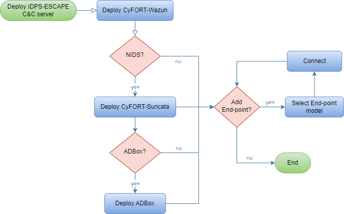
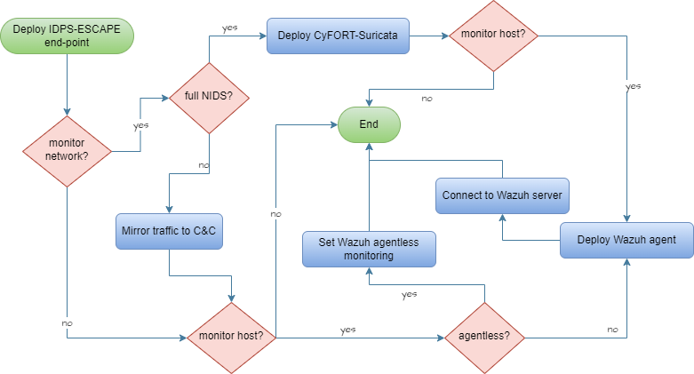

1.0 SONAR System Requirements
System-level requirements for SONAR (SIEM-Oriented Neural Anomaly Recognition) anomaly detection subsystem.
1.1 ML Hyperparameter Tuning SRS-018
As a user, I want to modify the default hyperparameter of ML methods used by ADBox.
- Access C&C server
- Access ADBox
- Modify values in
siem_mtad_gat/assets/default_configs/mtad_gat_train_config_default_args.json
Rationale
To globally tune ML algorithm to a specify system/scenario
Acceptance criteria
Successful validation according to the corresponding test case specification
Parent links: MRS-015 Software Configuration Management
Child links: LARC-012 ADBox ConfigManager
| Attribute | Value |
|---|---|
| importance | 3 |
| urgency | 2 |
| risk | 2 |
| type | F |
| version | 0.1 |
1.2 ML-Based Anomaly Detection SRS-027
As a system admin, I want to run a machine learning algorithm to detect anomalous behaviors within my system.
- Access C&C server
- Access ADBox
- Select a trained detector
- Run a prediction script using the chosen detection either for a selected time interval or in real time.
Rationale
None
Acceptance criteria
Successful validation according to the corresponding test case specification
Parent links: MRS-030 Deep Learning Technique
Child links: LARC-020 SONAR detection pipeline sequence, TST-007 ADBox use case 1 with a Wazuh connection, TST-008 ADBox use case 1 without a Wazuh connection, TST-011 ADBox use case 3 with a Wazuh connection, TST-012 ADBox use case 3 without a Wazuh connection, LARC-008 ADBox batch and real-time prediction flow
| Attribute | Value |
|---|---|
| importance | 5 |
| urgency | 4 |
| risk | 2 |
| type | F |
| version | 0.1 |
1.3 Algorithm Comparison Feature SRS-028
As a user, I want to compare the outcome of different anomaly detection algorithms on my data.
Assuming: Two different algorithms A1 and A2 available in ADBox, and two compatible detectors D1 and D2 based on these algorithms, respectively.
- Access C&C server
- Access ADBox
- Establish detection parameters (time interval, features, etc.)
- Select a (trained) detector D1 using algorithm A1
- Run a prediction script using D1.
- Select a (trained) detector D2 using algorithm A2
- Run a prediction script using D2.
- Compare output using dedicated Dashboard.
Rationale
To validate the AD capabilities.
Acceptance criteria
Successful validation according to the corresponding test case specification
Parent links: MRS-031 Multiple ML Techniques
| Attribute | Value |
|---|---|
| importance | 2 |
| urgency | 1 |
| risk | 1 |
| type | F |
| version | 0.1 |
1.4 Host & Network Ingestion SRS-029
As a user, I want to ingest and transform data generated from both host and network events to feed anomaly detectors.
- Access C&C server
- Access ADBox
- Set up data ingestion and transformation of data derived from CyFORT-Wazuh and CyFORT-Suricata logs arguments.
Rationale
To enable holistic system monitoring.
Acceptance criteria
Successful validation according to the corresponding test case specification
Parent links: MRS-032 Host and Network Ingestion
Child links: LARC-003 ADBox preprocessing flow
| Attribute | Value |
|---|---|
| importance | 4 |
| urgency | 4 |
| risk | 1 |
| type | F |
| version | 0.2 |
1.5 AD Results Visualization SRS-030
As a user, I want to read/plot AD results of training and test data.
Assuming: trained detector with unique identifier uuid available.
- Access C&C server
- Access ADBox
- Open the folder
siem_mtad_gat/assets/detector_models/uuid/training - Use either external tools or viz-notebooks to visualize
- train subset AD output:
train_output.pkl- test subset AD output:test_output.pkl
Rationale
To enable programmatic use of such data to further elaborate and evaluate output of training
Acceptance criteria
Successful validation according to the corresponding test case specification
Parent links: MRS-034 Standardized AD Output
Child links: TST-037 Open prediction file of training data
| Attribute | Value |
|---|---|
| importance | 2 |
| urgency | 2 |
| risk | 2 |
| type | F |
| version | 0.1 |
1.6 Training Loss Visualization SRS-031
As a user, I want to read/plot losses of training and test data.
Assuming: trained detector with unique identifier uuid available.
- Access C&C server
- Access ADBox
- Open the folder
siem_mtad_gat/assets/detector_models/uuid/training - Use either external tools or viz-notebooks to visualize
- train :
train_losses.png- test :test_losses.png
Rationale
To evaluate quality of output of training
Acceptance criteria
Successful validation according to the corresponding test case specification
Parent links: MRS-034 Standardized AD Output
Child links: TST-038 Visualize train losses
| Attribute | Value |
|---|---|
| importance | 1 |
| urgency | 1 |
| type | F |
| version | 0.1 |
1.7 Predicted Anomalies Visualization SRS-032
As a user, I want to read/plot the list of predicted anomalies .
Assuming: trained detector with unique identifier uuid available, use-case scenario uc-x given.
- Access C&C server
- Access ADBox
- Within
siem_mtad_gat/assets/detector_models/uuid/predictionfolder, open:uc-x_predicted_anomalies_data-*.json
Rationale
To enable programmatic use of such data to further elaborate and evaluate output of prediction
Acceptance criteria
Successful validation according to the corresponding test case specification
Parent links: MRS-034 Standardized AD Output
Child links: TST-039 Open prediction raw outcome
| Attribute | Value |
|---|---|
| importance | 4 |
| urgency | 3 |
| risk | 1 |
| type | F |
| version | 0.1 |
1.8 Offline Anomaly Detection SRS-035
As I user, I want to perform off-line AD on a SIEM data registered by Wazuh on date YYYY-MM-DD.
Assuming: trained detector with unique identifier uuid available.
- Access C&C server
- Access ADBox
- Add an use-case file
siem_mtad_gat/assets/drivers/uc_x.yamlincluding
yaml
prediction:
run_mode: "historical"
index_date: YYYY-MM-DD
detector_id: uuid
Rationale
To detect anomalies without real-time obstacles and possibly after pre-selection, and to review events from the past investigating a possible threat
Acceptance criteria
Successful validation according to the corresponding test case specification
Parent links: MRS-039 Offline AD
Child links: LARC-020 SONAR detection pipeline sequence, TST-009 ADBox use case 2 with a Wazuh connection, TST-010 ADBox use case 2 without a Wazuh connection, LARC-002 ADBox historical data prediction pipeline flow
| Attribute | Value |
|---|---|
| importance | 4 |
| urgency | 4 |
| risk | 2 |
| type | F |
| version | 0.1 |
1.9 Anomaly-Based NIDS SRS-037
As a user, I want to find anomalies in the network traffic to detect threats not recognized by the signature-based NIDS.
Assuming: CyFORT-Suricata integrated with CyFORT-Wazuh
- Access C&C server
- Access ADBox
- Add an use-case file
siem_mtad_gat/assets/drivers/uc_x.yamlincluding as features attributes from Suricataeve.logdecoding - Run ADBox
Rationale
None
Acceptance criteria
Successful validation according to the corresponding test case specification
Parent links: MRS-004 Multivariate Anomaly Detection
Child links: TST-015 ADBox use case 5 with a Wazuh connection, TST-016 ADBox use case 5 without a Wazuh connection
| Attribute | Value |
|---|---|
| status | To detect deviations from an a priori normal baseline system behavior, possibly caused by malicious actors. |
| importance | 4 |
| urgency | 3 |
| risk | 1 |
| type | F |
| version | 0.1 |
1.10 Joint Host-Network Training SRS-038
As a user, I want to train a detector to detect anomaly by using both host and network events.
- Access C&C server
- Access ADBox
- Train a detector using features derived from CyFORT-Wazuh and CyFORT-Suricata logs arguments.
Rationale
None
Acceptance criteria
Successful validation according to the corresponding test case specification
Parent links: MRS-030 Deep Learning Technique
Child links: LARC-019 SONAR training pipeline sequence, TST-013 ADBox use case 4 with a Wazuh connection, TST-014 ADBox use case 4 without a Wazuh connection, LARC-001 ADBox training pipeline flow
| Attribute | Value |
|---|---|
| importance | 5 |
| urgency | 4 |
| risk | 2 |
| type | F |
| version | 0.1 |
1.11 Algorithm Selection Option SRS-039
As a user, I want to be able to select the algorithm to use for AD to run AD according to the most suitable AD principle.
- Access C&C server
- Access ADBox
- Select the ML-package to be used by the training/test pipelines.
Rationale
Adapt AD functionality to different scenarios and maximize accuracy.
Acceptance criteria
Successful validation according to the corresponding test case specification
Parent links: MRS-031 Multiple ML Techniques
Child links: LARC-009 ADBox machine learning package
| Attribute | Value |
|---|---|
| status | unavaliable |
| importance | 3 |
| urgency | 2 |
| risk | 2 |
| type | F |
| version | 0.1 |
1.12 Data Management Subpackage SRS-040
ADBox should include a Data Management subpackage, centralizing data storage, retrieval and all other operation concerning the management of data along the AD pipelines.
Rationale
To consolidate the data management operation
Acceptance criteria
Code inspection
Parent links: MRS-004 Multivariate Anomaly Detection
Child links: LARC-010 ADBox data manager
| Attribute | Value |
|---|---|
| importance | 3 |
| urgency | 3 |
| risk | 3 |
| type | A |
| version | 0.1 |
1.13 Time Management Package SRS-041
ADBox should include a Time Management package, handling various aspects of time-related operations given the time-series based approach.
Rationale
To consolidate the time management operation
Acceptance criteria
Code inspection
Parent links: MRS-004 Multivariate Anomaly Detection
Child links: LARC-011 ADBox TimeManager
| Attribute | Value |
|---|---|
| importance | 3 |
| urgency | 2 |
| risk | 2 |
| type | A |
| version | 0.1 |
1.14 Prediction Shipping Feature SRS-042
As a user, I want the prediction of the anomaly detection subsystem to be shipped to the central indexer.
Assuming:
-
CyFORT-Wazuh and ADBox deployed
-
a use case, including training settings available.
- Build ADBox container
- Run ADBox training with the shipping flag enabled
- When using the created detector, turn the shipping on.
Rationale
Centralization and integration of information
Acceptance criteria
Successful validation according to the corresponding test case specification
Parent links: MRS-018 Data Management Subsystem
Child links: LARC-020 SONAR detection pipeline sequence, TST-018 ADBox Create detector data stream, LARC-014 ADBox Shipper, LARC-013 ADBox RequestResponseHandler
| Attribute | Value |
|---|---|
| importance | 2 |
| urgency | 2 |
| risk | 2 |
| type | F |
| version | 0.1 |
1.15 AD Data Visualization SRS-043
As a user, I want a graphic visualization of the data produced by the anomaly detection subsystem.
Assuming:
-
CyFORT-Wazuh and ADBox deployed and integrated
-
At least a detector data stream available in CyFORT-Wazuh Indexer
- Open CyFORT-Wazuh
- Add the detector's pattern to Dashboard pattern list.
- (Optional) Create an ad hoc visualization and a Dashboard.
Rationale
Accessibility of AD data for the end-users and centralise forensics
Acceptance criteria
Successful validation according to the corresponding test case specification
Parent links: MRS-017 Monitoring Frontend
Child links: TST-033 ADBox Wazuh integration Dashboard
| Attribute | Value |
|---|---|
| importance | 2 |
| urgency | 2 |
| risk | 2 |
| type | F |
| version | 0.1 |
1.16 Cross-platform SONAR deployment SRS-046
As a user, I want to deploy ADBox as a platform independent solution.
Assuming:
- CyFORT-Wazuh deployed
- Deploy SONAR via Docker and shell scripts.
Rationale
Ensure cross-platform compatibility and portability for usage.
Acceptance criteria
Successful validation according to the corresponding test case specification
Parent links: MRS-020 Platform Independence
Child links: TST-001 Deploy ADBox via Docker and shell scripts
| Attribute | Value |
|---|---|
| importance | 5 |
| urgency | 5 |
| risk | 2 |
| type | F |
| version | 0.1 |
1.17 Interactive Use Case Builder SRS-047
As a user, I want to interactively compile a use case, to create an anomaly detector and run predictions.
- Access C&C server
- Access ADBox
- Run interactive shell.
Rationale
To simplify the process of preparing use-case files.
Acceptance criteria
Successful validation according to the corresponding test case specification
Parent links: MRS-030 Deep Learning Technique
Child links: TST-004 Run ADBox console
| Attribute | Value |
|---|---|
| urgency | 2 |
| type | F |
| version | 0.1 |
1.18 Default Detector Training SRS-048
As a user, I want to train a base detector using default parameters.
- Access C&C server
- Access ADBox
- ADBox with default option.
Rationale
To obtain a detector without use case specification.
Acceptance criteria
Successful validation according to the corresponding test case specification
Parent links: MRS-030 Deep Learning Technique
Child links: LARC-019 SONAR training pipeline sequence, TST-005 Run ADBox in default mode with a Wazuh connection, TST-006 Run ADBox in default mode without a Wazuh connection, TST-050 Linux resource usage monitoring scenario
| Attribute | Value |
|---|---|
| importance | 2 |
| urgency | 2 |
| risk | 1 |
| type | F |
| version | 0.1 |
1.19 Anomaly Shipping to Indexer SRS-049
As a user, I want to enable the shipping of anomaly detection outcomes to the central indexer to centralize data anaysis and threat hunting.
- Access Command and Control server.
- Access ADBox.
- Run shipping installation script.
Rationale
To ensure consisten integration of AD outcomes with SIEM
Acceptance criteria
Successful validation according to the corresponding test case specification
Parent links: MRS-021 IaC Deployment
Child links: TST-017 ADBox shipping install
| Attribute | Value |
|---|---|
| importance | 3 |
| urgency | 3 |
| risk | 2 |
| type | F |
| version | 0.1 |
2.0 RADAR System Requirements
System-level requirements for RADAR (Real-time Alert Detection and Automated Response) automated response subsystem.
2.1 RADAR scenario: ransomware SRS-057
As a security engineer, I want RADAR to detect ransomware attacks on Windows endpoints through multiple detection layers (pre-execution scanning, behavior-based rules, and file system anomalies), and then execute automated responses including file recovery and containment.
Scope
Endpoint coverage: This requirement applies to Windows endpoints monitored by Wazuh agents with Sysmon installed, FIM configured with real-time monitoring on critical user directories (Downloads, Documents, Desktop), and VirusTotal integration enabled.
Detection layers: Three complementary layers are employed across different attack phases:
- Pre-execution — VirusTotal scanning of newly created or modified files via Wazuh FIM integration (known-malware coverage via threat intelligence)
- Execution-time — Sysmon event monitoring and custom Wazuh rules detecting ransomware behavioral patterns (defense evasion, persistence, backup deletion)
- Encryption-phase — FIM frequency-based correlation rules detecting rapid bulk file modifications or creations (catches novel/zero-day variants)
Rule series: Custom ransomware detection rules 100600–100629, supplemented by VirusTotal rule 87105.
Recovery mechanism: Volume Shadow Copy snapshots created proactively by the Wazuh Command module, disabled between operations to prevent ransomware deletion.
Alert delivery: Detection rule trigger → Wazuh alert → Active Response execution → audit log.
Requirements
-
Pre-execution detection: RADAR shall integrate Wazuh FIM with VirusTotal to scan files upon creation or modification in monitored directories (Downloads, Documents, Desktop folders). When VirusTotal identifies a file as malicious, RADAR shall trigger an Active Response to remove the threat before execution.
-
Execution detection: RADAR shall detect ransomware behaviors through Sysmon-monitored events and custom rules that identify:
- Volume shadow copy deletion attempts (
vssadmin delete shadows,wmic shadowcopy delete,wbadmin delete catalog) - System recovery inhibition (
bcdeditmodifications disabling recovery) - Windows Defender tampering (service disablement, registry modifications)
- Windows firewall disabling
- Boot configuration data modifications
- Persistence mechanisms (registry run keys, startup folder additions)
- Windows event log clearing
- Suspicious file operations (executable copying to AppData, WerFault DLL sideloading)
- File system anomaly detection: RADAR shall detect abnormal file system activity patterns using FIM frequency-based correlation rules:
- Multiple file modifications in user directories within a short time window (≥10 modifications within 30 seconds)
- Multiple file creations across different directories within a short time window (indicating ransom note distribution)
- Unusual file extension patterns appearing across monitored directories
- Alert generation: RADAR shall emit a “Ransomware attack detected” alert when any of the following conditions are met:
- VirusTotal identifies ransomware (rule 87105)
- System recovery inhibition behaviors detected (rules 100615–100621)
- Multiple ransomware indicators detected within correlation window (rule 100628)
- Rapid file system changes detected (rules 100626–100627)
- Alert content: Ransomware alerts shall include:
- Endpoint identity (
agent.name) and detection method (VirusTotal/behavioral/file-system) - Specific rule ID and description, and MITRE ATT&CK technique IDs
- Timestamp and affected file paths (when applicable)
- Command lines executed (when applicable)
- Automated response: Upon ransomware detection, RADAR shall execute the following Active Response actions:
- Email notification to SOC team with alert details
- Case creation in integrated SOAR platforms (e.g., FlowIntel) for high-risk alerts
- Automatic file recovery from Volume Shadow Copy snapshots (when recovery AR is triggered by rule 100628)
- Context collection and forensic logging
- All active response executions shall be logged with success/failure status
- Preventive protection: RADAR shall configure the Wazuh Command module on Windows endpoints to:
- Periodically create Volume Shadow Copy snapshots (configurable interval, default 12 hours)
- Disable VSS service between snapshot operations to prevent ransomware from deleting backups
- Enable snapshots to be used for post-attack file recovery
- Configuration requirements: RADAR shall provide deployment automation for:
- Wazuh FIM configuration with real-time monitoring (
realtime="yes") on critical directories - Sysmon installation and configuration with ransomware-relevant event logging
- VirusTotal integration with API key configuration
- Custom ransomware detection rules (100600–100629 series)
- Active Response scripts for threat removal and file recovery
- Volume Shadow Copy protection via Command module
Rationale
Ransomware can cause complete operational disruption within minutes, requiring detection across all attack phases. Pre-execution VirusTotal scanning covers known families; Sysmon behavioral rules catch zero-day variants via universal TTPs (backup deletion, defense tampering — MITRE ATT&CK T1486, T1490); FIM frequency rules serve as a last line of defense during rapid bulk encryption. Proactive VSS snapshot creation with VSS service disablement between operations ensures recovery capability even if the Wazuh agent itself is compromised.
Acceptance criteria
Successful validation according to the corresponding test specification, including:
- Detection of ransomware file drops via VirusTotal integration
- Detection of at least 8 different ransomware behavioral patterns
- Successful Active Response execution for threat removal
- Successful file recovery from VSS snapshots
- Alert generation within 60 seconds of detection
- Complete forensic logging of all detection and response actions
Parent links: MRS-007 Intrusion Prevention
Child links: LARC-021 RADAR risk engine calculation flow, LARC-026 RADAR active response decision pipeline
| Attribute | Value |
|---|---|
| importance | 5 |
| urgency | 4 |
| risk | 3 |
| type | F |
| version | 1.0 |
2.2 RADAR: Tiered active response logic SRS-061
As a security engineer, I want RADAR to apply a consistent, risk-scored tiered response framework across all detection scenarios, with integrated DECIPHER case creation, so that the SOC receives proportionate, auditable, and actionable responses for every alert.
Scope
Risk score input: The tier classification is driven by the unified risk score $R \in [0, 1]$ computed by the RADAR risk engine per the formula $R = w_{ad} \times A + w_{sig} \times S + w_{cti} \times T$. The mathematical specification of the risk engine is defined in radar-risk-math.md.
Tier boundaries: Default boundaries are defined globally and are configurable in ar.yaml. Per-scenario overrides are permitted where operationally justified.
DECIPHER integration: Case creation is performed via the DECIPHER subsystem of SATRAP-DL, which creates and manages cases in FlowIntel. Availability of DECIPHER is checked at runtime; its unavailability does not interrupt risk calculation or other response actions.
Requirements
- RADAR shall classify every active response execution into exactly one response tier based on the computed risk score R:
-
(i) Tier 0 - Logging only (risk score below the configured Tier 1 minimum, where applicable): RADAR logs the event and risk computation to the audit log. No email notification is performed. Tier 0 is implemented as a minimum value of Tier 1. To explicitly enable Tier 0 suppression of Tier 1 actions, the
tier1_minparameter must be set to a value greater than 0 inar.yaml. -
(ii) Tier 1 - Low risk (0.0 ≤ R <
tier1_max, defaulttier1_max= 0.33): RADAR sends an email notification to the configured SOC recipient and records the decision in the audit log. -
(iii) Tier 2 - Medium risk (
tier1_max≤ R <tier2_max, default range 0.33–0.66): RADAR executes all Tier 1 actions. Optional scenario-specific mitigations may be executed ifallow_mitigation = trueis set inar.yaml. -
(iv) Tier 3 - High risk (R ≥
tier2_max, defaulttier2_max= 0.66): RADAR executes all Tier 2 actions. Mitigation actions configured for the scenario (e.g.,firewall_drop,lock_user_linux,terminate_service) shall be executed whenallow_mitigation = trueis set, subject to the mitigation safety gates defined in the active response specification.
- Tier boundaries shall be configurable in
ar.yamlwithout code changes:
- (i) Global tier boundaries are defined under the
tiers:key:
tiers:
tier1_min: 0.0 # Lower bound for Tier 1; set > 0 to enable Tier 0 suppression
tier1_max: 0.33 # Upper bound of Tier 1 (low risk)
tier2_max: 0.66 # Upper bound of Tier 2 (medium risk)
- (ii) Tier boundaries must satisfy
0.0 ≤ tier1_min ≤ tier1_max ≤ tier2_max ≤ 1.0. Violation of this constraint shall cause the active response script to log a CRITICAL error and exit without executing any actions.
- RADAR integration with the DECIPHER subsystem of SATRAP-DL:
-
(i): Before making use of DECIPHER endpoints (e.g. to obtain a CTI score or create an incident case), RADAR shall first query the DECIPHER health endpoint. If DECIPHER is unavailable (connection refused, timeout, or non-2xx response), RADAR shall log a WARNING and proceed with all other risk-aware tiered response actions (email, mitigations, audit logging) without interruption. DECIPHER API invocation shall not be retried within the same active response execution.
-
(ii): When DECIPHER is available, RADAR shall submit a CTI analysis request to DECIPHER.
-
(iii): A successful DECIPHER response will return a CTI score $T$.
-
(iv): The call to the analysis endpoint of the DECIPHER API shall provide a dictionary of specific fields, specified per scenario.
-
(v): If DECIPHER returns an error response (
4xxor5xx), RADAR shall log the error with full response detail and continue with the remaining response actions. The execution result record shall reflect the DECIPHER execution status.
- For Tier 1 and above, RADAR shall send an email notification to the configured SOC recipient and create a Flowintel case via the incident endpoint of the DECIPHER API:
-
(i) RADAR invokes the incident endpoint of the DECIPHER API to create a case. The case is populated by DECIPHER with CTI analysis results and assigned a priority tag. The priority tag reflects the tier determined by RADAR (based on its computed risk score) and it is intended for use by security analysts for triage within the FlowIntel interface.
-
(ii) The case submitted to DECIPHER shall include at minimum: RADAR scenario name, triggering agent name and ID, alert timestamp, risk score, tier classification, decision ID, title of case origin and the list of extracted IOCs.
-
(iii) The email body content shall include: alert summary, scenario name, risk score and tier classification, risk component breakdown (anomaly, signature, CTI components), affected agent and user identity, extracted IOCs, decision ID, and recommended manual verification steps. Moreover, the email body shall include the FlowIntel case ID and URL link returned by DECIPHER in response to the incident API call, enabling the analyst to navigate directly to the case. Both the case ID and the link shall be: - Included in the email body sent to the SOC - Recorded in the structured audit log entry for the active response execution
-
(iv) If DECIPHER returns an error response (
4xxor5xx), RADAR shall log the error with full response detail and continue with the remaining response actions. The execution result record shall reflect the DECIPHER execution status. -
(v) If the SMTP configuration is incomplete or the email send fails, the failure shall be logged as ERROR and the remaining response actions shall continue unaffected.
- RADAR shall generate a unique decision ID for every active response execution and maintain a complete audit record:
-
(i) The decision ID is computed as
SHA256(JSON.dumps({alert_id, timestamp, rule_id, agent_id, scenario, detection, window, effective_agent}, sort_keys=True)), ensuring idempotency and deduplication. -
(ii) The audit record shall capture: decision ID, tier classification, risk score and all components, planned and executed actions, DECIPHER case ID and link (if created), mitigation outcomes, and any errors encountered.
-
(iii) Audit records shall be written to the structured JSON log at
/var/ossec/logs/active-responses.log.
Rationale
Automated response to security events must be proportionate to the assessed risk: acting aggressively on low-confidence signals wastes analyst time, disrupts legitimate users, and erodes trust in the system; acting conservatively on high-confidence signals leaves threats uncontained.
A tiered framework directly addresses this by mapping the continuous risk score R onto a discrete set of escalating response actions, each calibrated to the level of certainty and urgency warranted. Tier 0 preserves observability for events that are detected but do not yet meet the confidence threshold for operational action. Tier 1 ensures that no qualifying event goes unnoticed by the SOC. Tier 2 allows medium containment actions. Tier 3 authorizes automated containment actions (account lock, firewall block, service termination) only when the risk score provides sufficient confidence to justify the operational impact of those actions.
The use of a configurable risk score threshold, adjustable tier boundaries, and a per-scenario allow_mitigation flag means the framework can be tuned conservatively during initial deployment and progressively hardened as operational baselines and false-positive rates are understood. This avoids the binary choice between fully manual and fully automated response, instead providing a graduated path toward automation that the SOC can control and audit at each step.
Acceptance criteria
Successful validation according to test case specification, which shall verify:
-
Tier classification correctness: For each tier boundary, inject a synthetic alert with a risk score at and around the boundary value and verify that the correct tier is assigned and the correct actions are executed.
-
Tier 0 / Tier 1 minimum behavior: With default configuration (
tier1_min = 0), verify that no event is suppressed to Tier 0 - all events receive at minimum Tier 1 (email) treatment. Withtier1_min > 0, verify that events below the minimum receive logging-only treatment. -
DECIPHER health check - available: With DECIPHER running, trigger a Tier 2 alert and verify: health check passes, case is created, a FlowIntel case ID and link are returned, the link appears in the email body, and both are recorded in the audit log.
-
DECIPHER health check - unavailable: With DECIPHER unreachable, continue with risk calculation: health check fails with WARNING log, email notification is still sent, mitigations (if configured) are still executed, and the active response exits with success code.
-
Audit log completeness: For every tier test, verify that the audit log entry contains the decision ID, tier, risk score and all components, action outcomes, DECIPHER case ID/link (where applicable), and any errors.
Parent links: MRS-007 Intrusion Prevention
Child links: TST-042 Build suspicious login, TST-043 Build non-whitelist GeoIP detection, TST-044 Build log volume abnormal growth, TST-045 Run RADAR for log volume abnormal growth
| Attribute | Value |
|---|---|
| importance | 5 |
| urgency | 4 |
| risk | 3 |
| type | F |
| version | 0.8 |
2.3 RADAR scenario: DLP1 - insider data exfiltration SRS-050
As a security engineer, I want RADAR to detect high-volume file read/copy behavior on endpoints and automatically trigger host active response mitigations with a clear audit trail.
Scope
Monitored activity: This requirement applies to file access events on monitored endpoints, specifically read and copy operations captured via Sysmon file events (e.g., Event ID 11 FileCreate, Event ID 23 FileDelete used as proxy for moves/copies) or equivalent host telemetry ingested as Wazuh alerts.
Detection method: Per-user behavioral baseline using an RRCF (Robust Random Cut Forest) model. Each user learns their own normal file-access rate and copy indicator profile over time, enabling detection relative to individual behavior rather than a population average.
User coverage: All users with activity recorded in Wazuh-indexed host telemetry. Each user maintains an independent model instance, identified by the user.name field in the alert.
Time granularity: Configurable aggregation window over which read and copy volumes are computed and compared against the learned baseline.
Alert delivery: Anomaly detection results → Wazuh Monitor → webhook → active response trigger.
Requirements
- Anomaly detection: RADAR shall emit an "Insider Threat" alert when the per-user RRCF model classifies current file-access activity as abnormal:
- Abnormality criteria: observed read volume or copy indicators exceed the user’s learned RRCF baseline score above a configured anomaly threshold.
- Per-user model: each user shall have an independent behavioral baseline to detect deviations relative to that user’s own historical activity.
- Feature inputs: the model shall consume at minimum read operation count, copy operation count, and unique file paths accessed within the aggregation window.
- Alert content: The alert shall include sufficient context for triage and response:
- User identity (
user.name) and host identity (agent.name) - Detector name/ID, anomaly score, and confidence value from the RRCF model
- Timestamp and time window covering the anomalous activity period
- Observed metric values (read count, copy count) and their deviation from baseline
- Risk-threshold evaluation: The Wazuh Monitor shall send the alert to the configured webhook when the computed risk score exceeds the threshold defined in the RADAR Technical Specification:
- Risk scoring shall follow the Risk = Likelihood × Impact formulation, integrating the RRCF anomaly score (likelihood) with the scenario-configured severity weight (impact).
- Threshold configuration shall reside in the scenario configuration file and be adjustable without code changes.
- Automated response: When the risk threshold is passed, RADAR shall execute the configured agent active responses:
- Event logging: full logging of file-access events covering the anomalous period to the Wazuh indexer.
- User lock: the identified user account shall be locked on the affected host for the duration of the investigation period.
- Below-threshold handling: if the computed risk score is below the threshold, the alert shall be logged to the index without triggering host-level containment actions.
- Audit trail: All detection events, alerts, active responses, and their outcomes shall be logged to the Wazuh indexer with complete audit trails for compliance and forensic analysis.
Rationale
Bulk file read/copy activity is a reliable pre-exfiltration signal (MITRE ATT&CK T1005), covering threats staged locally for removal via media or out-of-band channels that network-based detection (SRS-058) cannot observe. Per-user RRCF modeling avoids false positives from power users while risk-weighted scoring enables proportionate automated containment.
Acceptance criteria
Successful validation according to the corresponding test case specification. Integration with Wazuh Sysmon event collection and RADAR active response framework must be demonstrable in a test environment simulating insider data collection scenarios (bulk file reads, mass copy operations).
Parent links: MRS-007 Intrusion Prevention
Child links: LARC-015 RADAR scenario setup flow, LARC-016 RADAR active response flow, LARC-017 RADAR integration with Opensearch modules, LARC-018 RADAR logical flow, LARC-021 RADAR risk engine calculation flow, LARC-022 RADAR detector creation workflow, LARC-023 RADAR monitor and webhook workflow, LARC-026 RADAR active response decision pipeline, LARC-027 RADAR data ingestion pipeline
| Attribute | Value |
|---|---|
| importance | 5 |
| urgency | 3 |
| risk | 2 |
| type | F |
| version | 0.8 |
2.4 RADAR scenario: suspicious login SRS-051
As a security engineer, I want RADAR to detect suspicious login activity (failed-login bursts and impossible travel) and apply the existing risk policy to contain the attack.
Scope
Protocol coverage: This requirement applies to SSH authentication events only (Wazuh rule ID series 5710-5760). Future iterations may extend to RDP (rule ID 60XXX series), web-based authentication, and database logins.
Authentication sources: SSH authentication events from Linux/Unix systems via syslog (PAM, sshd logs), specifically:
- Failed authentication: Wazuh upstream rule ID 5760 (base event detection)
- Successful authentication: Wazuh upstream rule ID 5715 (base event detection)
- Agents configured to monitor
/var/log/auth.logor equivalent system authentication logs
Note: Rule IDs 5715 and 5760 are standard Wazuh SSH authentication rules (part of the default ruleset), not custom RADAR rules. They serve as prerequisite detection events that trigger RADAR's correlation rules (210012-210022).
GeoIP enrichment: Requires SRS-055 GeoIP detection to provide radar_country_change_i and radar_geo_velocity_kmh custom fields.
Requirements
- RADAR shall emit a Suspicious Login alert when rule-based conditions classify the current SSH authentication pattern as abnormal. The system shall implement three detection mechanisms:
-
(i) Failed-login burst: Rule IDs 210012 and 210013 shall trigger when $\ge 5$ failed SSH authentication attempts (rule 5760) occur for the same user within 60 seconds, using Wazuh's
timeframeandfrequencycorrelation with<same_srcuser>or<same_user>matching. -
(ii) Impossible travel: Rule IDs 210020 (authentication_failed) and 210021 (authentication_success) shall trigger when an SSH login exhibits both:
- Country change:
radar_country_change_ifield equals 1 - High geo-velocity:
radar_geo_velocity_kmhfield ≥ 900 (detected via PCRE2 regex matching values ≥900)
- Country change:
-
(iii) Composite correlation: Rule ID 210022 shall trigger when both a failed-login burst (210012) and an impossible travel success (210021) occur for the same user within a 300-second window, using Wazuh's
<if_matched_sid>correlation withtimeframe="300"and<same_user />matching. This detects credential compromise scenarios where attackers first attempt brute-force from one location, then successfully authenticate from a geographically impossible location.
These rules operate alongside the AD pipeline (OpenSearch anomaly detector) but provide deterministic, immediate detection without requiring baseline training.
- The alert shall carry contextual metadata appropriate to the detection type:
-
For signature-based detection (rules 210012, 210013, 210020, 210021, 210022):
- Rule metadata: rule.id, rule.level, rule.description, rule.groups
- User/host context: srcuser/dstuser, srcip, agent.name, agent.id
- GeoIP context: radar_country_change_i, radar_geo_velocity_kmh, country, region, city
- Temporal context: timestamp, timeframe window
-
For AD-based detection (OpenSearch anomaly detector results):
- Anomaly metrics: anomaly_grade, anomaly_confidence, entity (categorical field value)
- Detection period: period_start, period_end
- Feature contributions: per-feature anomaly scores
-
Risk scoring (computed by active response script):
- risk_score: Weighted combination $R = w_{ad} \times A + w_{sig} \times S + w_{cti} \times T$ (range $[0,1]$)
- tier: Classification (1=low, 2=medium, 3=high) based on configurable thresholds
- components: Breakdown of anomaly_component, signature_component, cti_component
- Alert routing shall follow this workflow:
-
(a) Wazuh detects authentication pattern → Fires rule 210012/210013/210020/210021/210022
-
(b) Rule configured with
<active-response>invokes theradar_ar.pyscript -
(c) Active response script:
- Collects context events from OpenSearch (time window: signature=1min, AD=10min)
- Extracts IOCs (IPs, users, domains, hashes)
- Queries CTI analysis (SATRAP-DL DECIPHER if configured)
- Computes risk score using configured weights (w_ad, w_sig, w_cti)
- Determines tier based on risk_threshold boundaries
-
(d) If $R \ge \text{tier1}_{min}$: Execute tier-appropriate containment actions (see requirement 4). Otherwise, log alert to OpenSearch index only, no containment.
Note: For AD-based detections, the OpenSearch monitor sends webhook notifications independently, which are logged to /var/log/suspicious_login.log and ingested by Wazuh for correlation.
-
RADAR shall execute tiered response (SRS-061) actions based on the computed risk score:
-
Tier 0 (R below configured tier1_min, when Tier 0 suppression is enabled): Logging only. The event and full risk computation are recorded in the audit log. To enable Tier 0 suppression,
tier1_minmust be set to a value greater than 0 inar.yaml. -
Tier 1 (0.0 ≤ R < 0.33, or tier1_min ≤ R < tier1_max): An email notification and an incident case are created and sent to the configured SOC recipient and DECIPHER endpoint, respectively. Response actions are initiated: the decision is recorded in the audit log with full risk component detail.
-
Tier 2 (tier1_max ≤ risk_score < tier2_max, default 0.66): Active containment - IP blocking
- All Tier 1 actions, plus:
- Block source IP address via iptables/nftables for 3600 seconds (1 hour)
- Execute Wazuh's
firewall-dropactive response with timeout - Log firewall rule addition/removal to active response audit trail
-
Tier 3 (risk_score ≥ tier2_max, default 0.66): Aggressive containment - user and host isolation
- All Tier 2 actions, plus:
- Disable SSH access for the target user account via PAM/passwd modifications (
lock_user_linuxactive response) - Place affected host in isolated VLAN (requires SDN controller integration - planned for future release)
- Trigger immediate SOC escalation via high-priority email/webhook
-
-
Logging requirements: All containment actions (firewall rules, user lockouts, network changes) shall be logged to:
- OpenSearch anomaly response index with full context
- Wazuh active response log (
/var/ossec/logs/active-responses.log) - System audit logs (
/var/log/radar_ar.log)
-
Deferred capabilities (planned for future releases):
- SSO account lockout (requires Keycloak/LDAP integration - planned for SRS-052)
- Automated ticket creation in ITSM systems
- Dynamic threat intel submission to MISP/OpenCTI
- The system shall maintain comprehensive audit logs of all active response executions:
-
(a) Each active response invocation shall generate a unique decision_id (SHA256 hash of scenario+timestamp+alert)
-
(b) Audit records shall capture:
- Decision metadata: decision_id, timestamp, scenario_name, detection_type
- Input data: alert content, context events, IOCs extracted
- Risk computation: all component scores (A, S, T), weights, final risk_score, tier
- Actions taken: List of executed commands/API calls with timestamps
- Outcomes: Success/failure status for each action, error messages if any
-
(c) Audit logs shall be queryable in OpenSearch for compliance reporting and forensic analysis
-
(d) Log retention shall follow the organization's compliance requirements (minimum 90 days recommended)
Rationale
Failed-login bursts indicate brute-force or credential stuffing (MITRE ATT&CK T1110); impossible travel indicates stolen credentials used from unauthorized locations. Deterministic signature-based detection complements the OpenSearch AD pipeline, providing sub-minute response without requiring a training period.
Dependencies
- SRS-055: GeoIP detection (provides
radar_country_change_i,radar_geo_velocity_kmhcustom fields) - HARC-015: Active response framework (provides script execution infrastructure)
- MRS-007: Intrusion Prevention (parent mission requirement)
Related requirements
- SRS-052 (future): SSO integration for centralized account lockout
- SRS-056: Log volume detection (shares similar behavioral baseline and risk scoring approaches)
- SRS-058: Data exfiltration detection (shares IOC extraction and CTI enrichment patterns)
Acceptance criteria
Successful validation according to test case specification TST-051, which shall verify:
- Failed-login burst detection: Generate 5 failed SSH attempts within 60 seconds for a test user; verify rules 210012/210013 fire
- Impossible travel detection: Simulate SSH logins from Poland → USA → Australia with computed geo-velocity ≥ 900 km/h; verify rules 210020/210021 fire
- Correlation rule: Execute failed-login burst followed by impossible travel within 5 minutes; verify rule 210022 fires
- Risk scoring accuracy: For known test cases, verify risk_score computation matches expected values (±0.05 tolerance)
- Tier-based actions: Test scenarios at each tier boundary; verify correct containment actions execute (iptables rules added, user disabled, logs generated)
- Alert context completeness: Verify all required fields present in OpenSearch anomaly response index
- Audit log integrity: Verify all active response executions logged with complete decision context and action outcomes
- No false positives: Legitimate user behavior (normal login patterns, expected country changes with low velocity) shall not trigger alerts
Parent links: MRS-007 Intrusion Prevention
Child links: LARC-015 RADAR scenario setup flow, LARC-016 RADAR active response flow, LARC-017 RADAR integration with Opensearch modules, LARC-018 RADAR logical flow, LARC-021 RADAR risk engine calculation flow, LARC-022 RADAR detector creation workflow, LARC-023 RADAR monitor and webhook workflow, LARC-025 RADAR helper enrichment pipeline, LARC-026 RADAR active response decision pipeline, LARC-027 RADAR data ingestion pipeline, TST-042 Build suspicious login, TST-049 RADAR deployment integrity verification
| Attribute | Value |
|---|---|
| importance | 4 |
| urgency | 3 |
| risk | 2 |
| type | F |
| version | 0.5 |
2.5 RADAR scenario: DDoS detection SRS-052
As a security engineer, I want RADAR to detect inbound traffic surges consistent with DDoS against protected services and trigger the configured mitigation with auditable evidence.
Scope
Monitored traffic: This requirement applies to inbound network traffic directed at protected service endpoints, measured by connection rate and/or packet/byte volume per endpoint over a configurable time window.
Detection method: Per-endpoint behavioral baseline model that learns each service’s normal inbound traffic profile. Detection fires when the observed traffic volume or connection rate deviates significantly from the endpoint’s own learned baseline, rather than relying on a fixed global threshold.
Endpoint coverage: All Wazuh-monitored hosts and services configured for DDoS detection in the scenario. Each endpoint maintains an independent baseline instance, identified by agent.name or equivalent service identifier.
Time granularity: Configurable aggregation window over which inbound connection counts and byte volumes are accumulated and compared against the learned baseline.
Alert delivery: Anomaly detection results → Wazuh Monitor → webhook → active response trigger.
Requirements
- Anomaly detection: RADAR shall emit a "DDoS" alert when the per-endpoint model flags the current inbound traffic profile as anomalous:
- Abnormality criteria: observed inbound traffic volume or connection rate exceeds the endpoint’s learned baseline score above a configured anomaly threshold.
- Per-endpoint model: each protected service shall have an independent behavioral baseline to detect deviations relative to its own normal traffic pattern.
- Feature inputs: the model shall consume at minimum inbound connection count, inbound byte volume, and unique source IP count within the aggregation window.
- Alert content: The alert shall include sufficient context for triage and response:
- Host/service identity (
agent.name) and source context where available - Detector name/ID, anomaly score, and confidence value
- Timestamp and time window covering the anomalous traffic period
- Observed metric values (connection rate, byte volume) and their deviation from baseline
- Risk-threshold evaluation: The Wazuh Monitor shall send the alert to the configured webhook when the computed risk score exceeds the threshold defined in the RADAR Technical Specification:
- Risk scoring shall follow the Risk = Likelihood × Impact formulation, integrating the anomaly score (likelihood) with the scenario-configured severity weight (impact).
- Threshold configuration shall reside in the scenario configuration file and be adjustable without code changes.
- Automated response: When the risk threshold is passed, RADAR shall execute the configured active responses:
- Firewall block: inbound connections from flagged source ranges shall be blocked via Wazuh active response.
- Rate-limiting: connection rate limits shall be enforced on the affected host to protect service availability.
- Below-threshold handling: if the computed risk score is below the threshold, the alert shall be logged to the index without triggering network-level mitigation.
- Audit trail: All detection events, alerts, active responses, and their outcomes shall be logged to the Wazuh indexer with complete audit trails for compliance and forensic analysis.
Rationale
Volumetric DDoS attacks are identified by inbound traffic surges far exceeding a service's normal load. Per-endpoint behavioral modeling distinguishes genuine attacks from legitimate spikes, avoiding the false positives of fixed global thresholds, and wires the scored result directly to firewall and rate-limiting responses for rapid automated mitigation.
Acceptance criteria
Successful validation according to the corresponding test case specification. DDoS traffic simulation and firewall/rate-limit active response execution must be demonstrable in a test environment with inbound traffic telemetry collected by Wazuh.
Parent links: MRS-007 Intrusion Prevention
Child links: LARC-015 RADAR scenario setup flow, LARC-016 RADAR active response flow, LARC-017 RADAR integration with Opensearch modules, LARC-018 RADAR logical flow, LARC-021 RADAR risk engine calculation flow, LARC-022 RADAR detector creation workflow, LARC-023 RADAR monitor and webhook workflow, LARC-026 RADAR active response decision pipeline, LARC-027 RADAR data ingestion pipeline
| Attribute | Value |
|---|---|
| importance | 2 |
| urgency | 1 |
| risk | 2 |
| type | F |
| version | 0.5 |
2.6 RADAR scenario: malware C2 beaconing SRS-053
As a security engineer, I want RADAR to detect malware command-and-control communication through beaconing patterns and contain the attack using the configured active response flow.
Scope
Monitored activity: This requirement applies to outbound network connection events on monitored endpoints. Beaconing is identified by repeated outbound connections to the same external destination at near-regular intervals within a configurable analysis window.
Detection method: Per-host baseline detector that learns normal outbound connection behavior for each endpoint. A connection sequence is flagged as a beacon when its timing regularity and destination repetition exceed a configured threshold relative to the host’s historical outbound pattern.
Host coverage: All Wazuh-monitored endpoints configured for C2 beaconing detection in the scenario. Each host maintains an independent baseline instance, identified by agent.name.
Time granularity: Configurable analysis window within which connection timestamps to a single destination are evaluated for interval regularity.
Alert delivery: Anomaly detection results → Wazuh Monitor → webhook → active response trigger.
Requirements
- Beaconing detection: RADAR shall emit a "C2 Beaconing" alert when the per-host detector identifies beacon-like outbound connection behavior:
- Abnormality criteria: repeated connections to the same external destination at near-regular intervals, where interval regularity and frequency exceed the host’s learned baseline and the anomaly score is above a configured threshold.
- Per-host model: each endpoint shall have an independent behavioral baseline to distinguish beaconing from legitimate scheduled outbound activity (e.g., NTP, telemetry agents).
- Feature inputs: the model shall consume at minimum destination IP/domain, inter-connection interval regularity (jitter), connection count within the analysis window, and data volume per connection.
- Alert content: The alert shall include sufficient context for triage and response:
- Host identity (
agent.name) and user context where available - Detector name/ID, anomaly score, and confidence value
- Timestamp and analysis window covering the beaconing activity
- Destination IP/domain, observed interval regularity, and connection count
- Risk-threshold evaluation: The Wazuh Monitor shall send the alert to the configured webhook when the computed risk score exceeds the threshold defined in the RADAR Technical Specification:
- Risk scoring shall follow the Risk = Likelihood × Impact formulation, integrating the anomaly score (likelihood) with the scenario-configured severity weight (impact).
- Threshold configuration shall reside in the scenario configuration file and be adjustable without code changes.
- Automated response: When the risk threshold is passed, RADAR shall execute the configured containment active responses:
- Firewall block: outbound connections to the identified destination IP/range shall be blocked via Wazuh active response.
- Service termination: the process responsible for the beaconing connection shall be terminated on the affected host where process attribution is available.
- Host quarantine: the affected host shall be network-isolated to prevent further C2 communication and lateral movement.
- Below-threshold handling: if the computed risk score is below the threshold, the alert shall be logged to the index without triggering containment actions.
- Audit trail: All detection events, alerts, active responses, and their outcomes shall be logged to the Wazuh indexer with complete audit trails for compliance and forensic analysis.
Rationale
Periodic outbound connections to a fixed external destination at regular intervals are a hallmark of C2 implant check-in (MITRE ATT&CK T1071). Per-host behavioral modeling distinguishes beacons from legitimate scheduled processes (NTP, telemetry) without relying on static IP blocklists that malleable C2 frameworks easily evade.
Acceptance criteria
Successful validation according to the corresponding test case specification. C2 beaconing simulation and firewall block, service termination, and host quarantine active response execution must be demonstrable in a test environment with outbound connection telemetry collected by Wazuh.
Parent links: MRS-007 Intrusion Prevention
Child links: LARC-015 RADAR scenario setup flow, LARC-016 RADAR active response flow, LARC-017 RADAR integration with Opensearch modules, LARC-018 RADAR logical flow, LARC-021 RADAR risk engine calculation flow, LARC-026 RADAR active response decision pipeline, LARC-028 RADAR GeoIP detection scenario flow
| Attribute | Value |
|---|---|
| importance | 4 |
| urgency | 2 |
| risk | 2 |
| type | F |
| version | 0.5 |
2.7 RADAR automated test framework SRS-054
As a security engineer, I want the RADAR test workflow to be automated end-to-end for reproducibility, to bring up the stack, feed scenario data, exercise active responses, and collect results without manual steps.
Scope
Framework coverage: This requirement applies to the automated test pipeline for all RADAR detection scenarios. The framework shall support the full test lifecycle: environment provisioning, dataset ingestion, threat simulation, active response exercise, and result evaluation.
Execution environment: Tests shall run in an isolated containerised environment that mirrors the production RADAR stack (OpenSearch, Wazuh, webhook, active response agents) to ensure fidelity between test and production behaviour.
Repeatability target: Any test run shall be fully reproducible from a clean state given the same input datasets and scenario configuration, with no dependency on pre-existing state in the environment.
Integration scope: The framework shall cover all scenario types defined in the SRS (anomaly detection scenarios, GeoIP-based access control, volume spike detection, and active response flows).
Requirements
- Automated data ingest: The framework shall automatically prepare and load all required test data without manual intervention:
- Ingest scenario-specific alert datasets into OpenSearch indices in the format expected by the relevant RADAR detectors.
- Create and configure required users, hosts, and test entities in scenario-specific systems (e.g., Wazuh agent registration, OpenSearch user accounts).
- Validate successful ingestion before proceeding to subsequent test phases.
- Automated environment setup: The framework shall provision and configure the full RADAR stack from a defined baseline:
- Deploy all RADAR components and their dependencies using the project’s standard tooling (Docker Compose / Ansible).
- Apply scenario-specific configuration (detector parameters, thresholds, active response definitions) programmatically from the scenario configuration file.
- Verify component health and readiness before executing test cases.
- Automated threat simulation: The framework shall reproducibly exercise the attack scenarios that RADAR is designed to detect:
- Generate and inject synthetic or replay-based threat traffic/events that correspond to each scenario’s detection target (e.g., beaconing connections, traffic surges, file read spikes).
- Parameterise simulations so that both below-threshold and above-threshold cases can be exercised in a single run.
- Record simulation inputs and timing for traceability between injected events and observed detection results.
- Automated evaluation: The framework shall assess test outcomes and produce structured, machine-readable results:
- Evaluate detection results against expected outcomes (true positive, false positive, false negative, true negative) for each scenario test case.
- Compute evaluation metrics including detection rate, false positive rate, response latency, and active response success rate.
- Produce a structured test report (artifacts + metrics) that can be archived and compared across test runs to track regressions.
- Audit trail: All test execution steps, ingested datasets, simulation parameters, detection results, and evaluation metrics shall be persisted as test artifacts for post-run analysis and compliance evidence.
Rationale
Manual test execution of multi-component security systems is error-prone and difficult to reproduce. A fully automated framework guarantees identical environment state, data flow, and result collection across runs, providing a reliable regression baseline and enabling objective comparison of detection performance over time.
Acceptance criteria
Successful validation according to the corresponding test case specification. A complete automated test run covering at minimum one detection scenario must be demonstrable: from clean environment provisioning through dataset ingest, threat simulation, active response execution, and structured result report generation, without any manual intervention.
Parent links: MRS-007 Intrusion Prevention
Child links: LARC-017 RADAR integration with Opensearch modules, LARC-021 RADAR risk engine calculation flow, LARC-026 RADAR active response decision pipeline, LARC-029 RADAR log volume detection scenario flow
| Attribute | Value |
|---|---|
| importance | 4 |
| urgency | 3 |
| risk | 2 |
| type | F |
| version | 0.5 |
2.8 RADAR scenario: Geo-IP AC via whitelisting SRS-055
As a security engineer, I want RADAR to enforce access control by detecting access attempts from non-whitelisted countries and applying the existing active response, so that connections from not approved geographies are detected.
Scope
Authentication protocol coverage: This requirement applies to any authentication event classified under Wazuh group authentication_success, including but not limited to: SSH (rule series 5715), web authentication (rule series 311XX), VPN authentication, and database logins.
Web server access logs: This requirement additionally applies to HTTP/HTTPS access logs from Apache and Nginx web servers, classified under Wazuh group accesslog. Detection monitors all incoming web requests regardless of HTTP status code.
GeoIP data source: Requires RADAR Helper enrichment service running as Wazuh integration, utilizing MaxMind GeoLite2 databases for IP-to-country resolution. Enrichment adds radar_country and radar_srcip custom fields to qualifying events.
Whitelist management: Country whitelist maintained as Wazuh CDB list at etc/lists/whitelist_countries using country names matching GeoLite2 country name format (e.g., "Luxembourg", "France", "Germany", "Belgium").
Private/internal IP handling: Detection logic explicitly excludes RFC1918 private address ranges (10.0.0.0/8, 172.16.0.0/12, 192.168.0.0/16) and link-local addresses to prevent false positives from internal network access. Private IP addresses do not trigger GeoIP enrichment or whitelist checking.
Requirements
- RADAR shall maintain a country whitelist as a machine-readable configuration that can be updated without code changes:
-
(i) Whitelist format: Wazuh CDB (constant database) list stored at
etc/lists/whitelist_countrieswith entries in formatcountry_name:(one per line, colon-terminated) -
(ii) Country names shall match MaxMind GeoLite2 country name format (e.g., "Luxembourg", "France", "Germany", "Belgium")
-
(iii) Whitelist updates: Modifications to the CDB list file shall be applied via Wazuh manager configuration reload (
ossec-control restartorsystemctl restart wazuh-manager) without requiring code changes -
(iv) List declaration: The whitelist shall be declared in
ossec.confwithin<ruleset><list>section, with appropriate file permissions (read access forwazuhuser)
- For each relevant security event, the RADAR Helper enrichment service shall augment Wazuh events with GeoIP metadata:
-
(i) Triggering events:
- Any event belonging to Wazuh group
authentication_successwith a valid source IP address - Any HTTP/HTTPS access log line from Apache or Nginx web servers monitored by the agent
- Any event belonging to Wazuh group
-
(ii) Enrichment fields added:
radar_country: Resolved country name from MaxMind GeoLite2 databaseradar_srcip: Source IP address (normalized/extracted from original event)radar_city: City name (metadata for potential future use)radar_region: Region/state name (metadata for potential future use)radar_asn: Autonomous System Number (metadata for potential future use)
-
(iii) Enrichment pipeline: RADAR Helper operates as Wazuh integration hook, processing events after initial decoding but before archiving
-
(iv) Database updates: MaxMind GeoLite2 databases shall be updated at least monthly to maintain geolocation accuracy
- RADAR shall emit a "Non-whitelisted Country Access" alert when the enriched country value does not match any entry in the configured whitelist:
-
(i) List-based detection for authentication events (Rule 100900, level 10):
- Matches events in group
authentication_success - Requires
radar_countryfield to be populated (PCRE2 regex.+check) - Uses Wazuh list lookup:
<list field="radar_country" lookup="not_match_key">etc/lists/whitelist_countries</list> - Fires when
radar_countryvalue NOT found in whitelist - Rule description: "Connection from non-whitelist country"
- Matches events in group
-
(ii) List-based detection for web access log events (Rule 100902, level 10):
- Matches events in group
accesslog - Requires
radar_countryfield to be populated (PCRE2 regex.+check) - Uses same Wazuh list lookup as Rule 100900:
<list field="radar_country" lookup="not_match_key">etc/lists/whitelist_countries</list> - Fires when
radar_countryvalue NOT found in whitelist - Rule description: "Connection from non-whitelist country (access log)"
- Decoded by
web-accesslog-domain,web-accesslog-ip-ip, orweb-accesslog-ipchild decoders (extended withtype="pcre2"regex to captureradar_country,radar_region,radar_cityfields from the RADAR tail)
- Matches events in group
-
(iii) Fallback hardcoded detection (Rule 100901, level 10):
- Matches events in group
authentication_success - Uses inline country check:
<srcgeoip negate="yes">Luxembourg|France|Germany|Belgium</srcgeoip> - Serves as backup detection only
- Rule description: "Connection from non-whitelist country"
- Limitation: The
<srcgeoip>rule option requires Wazuh to be compiled from source withUSE_GEOIP=yesflag and the legacy GeoIP.dat database.
- Matches events in group
-
(iv) Private IP exclusion: Rules shall NOT fire when source IP is in private address ranges (Wazuh's
<srcip>matching with negation ensures this) -
(v) Alert metadata includes:
- Rule metadata: rule.id (100900, 100901, 100902), rule.level (10), rule.description, rule.groups
- User/host context: dstuser, srcip (or radar_srcip), agent.name, agent.id
- GeoIP context: radar_country, radar_city, radar_region, radar_asn (if available)
- Temporal context: timestamp
- RADAR shall execute risk-based active response (SRS-061) when non-whitelisted country access is detected:
-
(i) Active response invocation: Rules 100900 and 100901 configured with
<active-response>block inossec.conf, invokingradar_ar.pyscript with scenariogeoip_detection -
(ii) Risk scoring: Active response script computes risk score using formula R = w_ad × A + w_sig × S + w_cti × T where:
- w_ad = 0.0 (no anomaly detection component for this signature-based scenario)
- w_sig = 0.6 (signature/rule-based component weight)
- w_cti = 0.4 (cyber threat intelligence component weight)
- A = 0 (no OpenSearch anomaly detector for this scenario)
- S = likelihood × impact = 0.8 × 0.6 = 0.48 (signature component)
- T = CTI enrichment score (1 if IOCs found in threat intel, 0 otherwise)
-
(iii) Tiered response actions:
- Tier 0 (
risk_score < tier1_min): Logging only - Tier 1 (
tier1_min ≤ risk_score < tier1_max, default 0.33): Email notification to SOC, FlowIntel case creation via DECIPHER incident endpoint, log to active response audit log - Tier 2 (
tier1_max ≤ risk_score < tier2_max, default 0.66): Tier 1 actions + block source IP viafirewall-dropactive response command (iptables/nftables rule with timeout) - Tier 3 (
risk_score ≥ tier2_max, default 0.66): Tier 2 actions + high-priority SOC escalation
- Tier 0 (
-
(v) Email format: Notification shall include alert summary, risk score breakdown, affected user/host, source country, and recommended manual verification steps
- The system shall maintain comprehensive audit logs of all active response executions:
-
(i) Each active response invocation generates unique decision_id (SHA256 hash of scenario+timestamp+alert)
-
(ii) Audit records shall capture:
- Decision metadata: decision_id, timestamp, scenario_name="geoip_detection", detection_type="signature"
- Input data: alert content (rule ID, level, description), source IP, country, user
- Risk computation: signature_component (S), cti_component (T), final risk_score, tier classification
- Actions taken: List of executed actions (email, firewall-drop, case creation) with timestamps
- Outcomes: Success/failure status for each action, error messages if any
-
(iii) Audit log destinations:
- OpenSearch anomaly response index:
wazuh-ar-geoip-detection-*(structured JSON, queryable) - Wazuh active response log:
/var/ossec/logs/active-responses.log(syslog format) - RADAR audit log:
/var/log/radar_ar.log(detailed execution trace)
- OpenSearch anomaly response index:
-
(iv) Log retention: Audit logs shall be retained for minimum 90 days (configurable per compliance requirements)
Rationale
Country-based access control reduces exposure to high-risk regions and supports GDPR/export-control compliance. The deterministic signature-based approach (rules 100900/100901) provides immediate detection without a training period, complementing behavioral anomaly detection for credential compromise scenarios (SRS-051).
Dependencies
- RADAR Helper (radar-helper.py): GeoIP enrichment service providing
radar_countryandradar_srcipfields via MaxMind GeoLite2 database lookup. Must be deployed as Wazuh integration hook. - MaxMind GeoLite2 Database: Country and City databases for IP geolocation. Requires periodic updates (monthly recommended) for accuracy.
- Wazuh CDB Lists: List-based detection (rule 100900) requires Wazuh support for CDB lists (
<list>tag in rules, list declaration inossec.conf). - HARC-015: Active response framework (provides script execution infrastructure,
radar_ar.pyimplementation). - MRS-007: Intrusion Prevention (parent mission requirement).
Related requirements
- SRS-051: Suspicious login detection (consumes
radar_country_change_iandradar_geo_velocity_kmhfields from same RADAR Helper service) - SRS-056: Log volume detection (shares risk scoring engine and active response framework)
- SRS-058: Data exfiltration detection (shares CTI enrichment patterns)
Acceptance criteria
Successful validation according to test case specification TST-055, which shall verify:
- Whitelisted country access (SSH): SSH login from whitelisted country (e.g., Luxembourg) → No alert fired
- Non-whitelisted country detection (list-based, SSH): SSH login from non-whitelisted country (e.g., USA) with
radar_countryenrichment → Rule 100900 fires with level 10 - Non-whitelisted country detection (fallback): SSH login from non-whitelisted country without CDB list → Rule 100901 fires with level 10
- Whitelist update: Add USA to
etc/lists/whitelist_countries, reload Wazuh manager, repeat login from USA → No alert fired - Private IP exclusion: SSH login from private IP (192.168.1.10) regardless of geolocation → No alert fired
- Web access log detection: HTTP request to Apache/Nginx from non-whitelisted country IP (e.g., Brazil) → RADAR Helper enriches log line with
radar_country="Brazil", Rule 100902 fires with level 10 - Web access log - whitelisted country: HTTP request from whitelisted country → Rule 100902 does not fire
- Web access log - private IP: HTTP request from RFC1918 address →
ApacheLogWatcherskips enrichment, no rule fires - Web decoder format support: Verify
radar_countryfield correctly extracted for all supported log formats (single IP, domain+IP, hostname:port+IP) viawazuh-logtest - Risk score computation: For rule 100900 alert, verify R = 0.6 × (0.8 × 0.6) + 0.4 × T = 0.288 + 0.4T, tier assignment based on threshold
- Tier 2 firewall action: Generate alert with risk_score ≥ 0.51 → Verify
firewall-dropactive response executes, source IP blocked in iptables, audit log entry created - Email notification: Verify SOC email sent with correct alert metadata, risk score breakdown, and source country information
- Audit log completeness: Verify all response actions logged to OpenSearch,
/var/log/radar_ar.log, and/var/ossec/logs/active-responses.logwith decision_id, risk components, and outcomes - RADAR Helper dependency: Disable RADAR Helper, generate authentication event → Verify enrichment fields absent, rule 100900 does not fire (rule 100901 fallback may fire if
srcgeoipavailable from other source)
Parent links: MRS-007 Intrusion Prevention
Child links: LARC-021 RADAR risk engine calculation flow, LARC-025 RADAR helper enrichment pipeline, LARC-026 RADAR active response decision pipeline, LARC-028 RADAR GeoIP detection scenario flow, TST-043 Build non-whitelist GeoIP detection, TST-049 RADAR deployment integrity verification
| Attribute | Value |
|---|---|
| importance | 5 |
| urgency | 4 |
| risk | 2 |
| type | F |
| version | 0.5 |
2.9 RADAR scenario: log size change SRS-056
As a security engineer, I want RADAR to detect unusual log volume spikes for each endpoint based on its own normal behavior, and then apply the existing risk policy to decide how to react.
Scope
Monitored directories: This requirement applies to the total disk usage of /var/log directory on each monitored endpoint, measured in bytes. Individual log files or log types are not separately analyzed in the current implementation.
Endpoint coverage: All Wazuh agents configured with log volume monitoring via local command execution (alias log_volume_metric). Agents must have read access to /var/log directory and permission to execute the du command.
Detection method: Per-endpoint behavioral baseline using OpenSearch Anomaly Detection High-Cardinality Detector (HCAD) with categorical field agent.name.keyword. Each endpoint learns its own "normal" log growth rate over the detector training period (default: 8 shingle intervals × 5 minutes = 40 minutes minimum baseline).
Time granularity: Detector interval 5 minutes, aggregation uses max function on data.log_bytes field to capture peak log volume within each window.
Alert delivery: Anomaly detection results → OpenSearch monitor → webhook → Wazuh log ingestion → rule-based active response trigger.
Requirements
- RADAR shall emit a "Log volume spike" alert when OpenSearch Anomaly Detection identifies behavior significantly exceeding the learned baseline for a specific endpoint:
-
(i) OpenSearch detector configuration (defined in
config.yamlunderscenarios.log_volume):- Detector name: "log_volume"
- Index pattern:
wazuh-ad-log-volume-*(date-based indexing for time-series data) - Result index:
opensearch-ad-plugin-result-log-volume(stores anomaly grades and metadata) - Categorical field:
agent.name(enables per-endpoint baselines using HCAD multi-entity detection) - Feature definition:
log_volume_maxusingmaxaggregation ondata.log_bytesfield - Shingle size: 8 (combines 8 consecutive intervals for pattern recognition)
- Detector interval: 5 minutes (measurement frequency)
- Window delay: 1 minute (allows for indexing lag before analysis)
-
(ii) Anomaly threshold criteria (both must be met to trigger alert):
- Anomaly grade:
anomaly_grade ≥ 0.3(configurable viaanomaly_grade_threshold) - Confidence:
confidence ≥ 0.3(configurable viaconfidence_threshold)
- Anomaly grade:
-
(iii) Baseline learning requirements:
- Minimum data points: 32 intervals (8 shingles × 4 intervals per shingle = ~2.7 hours at 5-minute intervals)
- Training period: Detector learns "normal" log volume distribution for each agent independently
- Adaptation: Model continuously updates to track gradual baseline drift (e.g., application upgrades increasing normal log verbosity)
-
(iv) Spike quantification: Anomaly grade > 0.3 typically indicates log volume deviation > 2σ (two standard deviations) above the learned mean for that specific endpoint. Grade > 0.7 indicates extreme deviation (> 3σ).
- The "Log volume spike" alert shall carry comprehensive metadata through the detection and response pipeline:
-
(i) OpenSearch monitor message (webhook payload structure):
- Monitor metadata:
monitor_name="LogVolume-Monitor",trigger_name="LogVolume-Growth-Detected" - Anomaly metrics:
anomaly_grade(severity score [0,1]),confidence(model certainty [0,1]) - Entity identification:
entityfield contains agent name (e.g.,"agent.insider","webserver-prod-01") - Feature data:
feature_data.log_volume_max.data(actual measured log bytes value) - Time window:
period_start,period_end(ISO8601 timestamps defining the detection interval) - Detector context:
detector_id,detector_namefor traceability
- Monitor metadata:
-
(ii) Wazuh event fields (after webhook writes to log file and Wazuh ingests):
- Alert decoder:
opensearch_ad(custom decoder in0001-log-volume.xml) - Extracted fields:
data.anomaly_grade,data.confidence,data.trigger_name,data.entity_keyword - Trigger matching: Rule 100300 (generic AD alert) → Rule 100309 (specific to "LogVolume-Growth-Detected")
- Alert decoder:
-
(iii) Active response augmentation (radar_ar.py LogVolume class processing):
- Agent resolution: Parses
data.entity_keywordto extract agent name/ID - Time window computation: Converts
period_start/period_endto datetime for context collection - Detector metadata: Adds
detector_name="log_volume",scenario_id="log_volume"to audit records - Context enrichment: Queries OpenSearch for events from affected agent within time window
- Agent resolution: Parses
- Each monitored endpoint shall execute a local command to measure
/var/logdirectory size and report results to Wazuh manager:
-
(i) Agent configuration (localfile command in
radar-log-volume-agent-snippet.xml):xml <localfile> <log_format>full_command</log_format> <command>du -sb /var/log | awk '{print "log_bytes: "$1}'</command> <alias>log_volume_metric</alias> <frequency>300</frequency> </localfile> -
(ii) Command behavior:
du -sb /var/log: Disk usage in bytes, summarize (single total for directory tree)awk '{print "log_bytes: "$1}': Formats output as structured key-value pair- Output example:
log_bytes: 524288000(500 MB in bytes)
-
(iii) Execution frequency: 300 seconds (5 minutes), aligned with OpenSearch detector interval to ensure one measurement per detection window
-
(iv) Permissions and requirements:
- Command runs as
wazuhuser (agent process owner) - Requires read access to
/var/logand subdirectories - Requires
duandawkcommands available in agent's PATH - Works on Linux/Unix systems (not applicable to Windows agents without modification)
- Command runs as
- Wazuh agents shall send log volume measurements to the manager, where a decoder extracts the metric and forwards it to OpenSearch for indexing:
-
(i) Wazuh decoder (defined in
0001-log-volume.xml):- Decoder name:
log_volume_metric - Matches alias:
log_volume_metric(tags output from localfile command) - Field extraction: Parses
log_bytes: <value>pattern, stores indata.log_bytes
- Decoder name:
-
(ii) Index pattern:
wazuh-ad-log-volume-YYYY.MM.DD(date math enabled via index template or pipeline)- Date-based indexing facilitates time-series queries and retention policies
- Index template defines mappings:
@timestamp(date),agent.name(keyword),data.log_bytes(long)
-
(iii) Document structure (example):
json { "@timestamp": "2026-02-17T14:35:00.000Z", "agent": { "name": "webserver-prod-01", "id": "001" }, "data": { "log_bytes": 524288000 }, "decoder": { "name": "log_volume_metric" } } -
(iv) Index refresh interval: 5 seconds (balances near-real-time detection with indexing overhead). OpenSearch detector query runs every 5 minutes, querying data from previous interval.
- OpenSearch monitor shall evaluate detector results and deliver alerts via webhook when thresholds are exceeded:
-
(i) Monitor configuration (automated via
radar/anomaly_detector/monitor.py):- Monitor type: Per-query monitor (queries anomaly detector result index)
- Schedule: Runs every detector interval (5 minutes)
- Query:
anomaly_grade >= 0.3 AND confidence >= 0.3againstopensearch-ad-plugin-result-log-volume
-
(ii) Trigger conditions: When query returns results (threshold exceeded for any entity)
- Trigger name: "LogVolume-Growth-Detected" (matched by Wazuh rule 100309)
- Severity: High (configurable)
-
(iii) Webhook action: HTTP POST to RADAR webhook service endpoint
- Webhook URL:
http://<webhook-service>:5000/webhook(configurable) - Payload: JSON containing monitor metadata, anomaly metrics, entity, time window
- Retry logic: 3 attempts with exponential backoff (OpenSearch default)
- Webhook URL:
-
(iv) Webhook processing (RADAR webhook service):
- Receives JSON POST request
- Formats message as syslog-compatible text
- Writes to
/var/log/ad_alerts.logwith timestamp and structured fields - Example log line:
Feb 17 14:40:01 radar-webhook: LogVolume-Growth-Detected entity=webserver-prod-01 anomaly_grade=0.75 confidence=0.82
-
(v) Wazuh ingestion:
- Wazuh manager monitors
/var/log/ad_alerts.log(configured inossec.conf) - Decoder
opensearch_adparses structured fields - Rule 100300 fires (generic AD alert), then rule 100309 fires (specific trigger match)
- Rule 100309 invokes active response via
<active-response>block
- Wazuh manager monitors
- RADAR shall execute risk-based active response when log volume anomalies exceed the configured risk threshold:
-
(i) Risk scoring: Active response script (
radar_ar.py) computes risk score using formula R = w_ad × A + w_sig × S + w_cti × T where:- w_ad = 0.9 (anomaly detection component weight - heavily favored for this AD-based scenario)
- w_sig = 0.0 (signature component weight - not applicable, no signature rules)
- w_cti = 0.1 (cyber threat intelligence component weight)
- A = anomaly_grade × confidence (both from detector output, range [0,1])
- S = 0 (no signature component for this scenario)
- T = CTI enrichment score (queries threat intel for affected agent IP if configured; typically 0 for log volume unless correlated with known malicious activity)
-
(ii) Example risk calculation:
- Anomaly: grade=0.75, confidence=0.82
- A = 0.75 × 0.82 = 0.615
- R = 0.9 × 0.615 + 0.0 × 0 + 0.1 × 0 = 0.554
- Result: risk_score = 0.554 → Tier 2 (0.33 ≤ 0.554 < 0.66)
-
(iii) Risk threshold: Alerts with risk_score ≥ 0.51 (configurable in
ar.yaml) trigger containment actions; below threshold alerts are logged only -
(iv) Tiered response actions:
- Tier 0 (
risk_score < tier1_min): Logging only -
Tier 1 (
tier1_min ≤ risk_score < tier1_max): Passive monitoring- Log alert to OpenSearch anomaly response index
- Send email notification to SOC (if SMTP configured)
- Record decision in audit log with tier=1
-
Tier 2 (
tier1_max ≤ risk_score < tier2_max): Active investigation- All Tier 1 actions, plus:
- Enhanced logging with context collection (recent events from affected agent)
- SOC dashboard alert escalation
-
Tier 3 (
risk_score ≥ tier2_max): Automated mitigation- All Tier 2 actions, plus:
- Execute
terminate_servicemitigation (requires manual playbook implementation - typically stops log-generating service or rotates logs) - Create incident case in Flowintel (if configured)
- Immediate SOC escalation via high-priority notification
- Tier 0 (
-
(v) Email notification format: Alert summary, anomaly metrics (grade, confidence), affected agent, log volume value, time window, risk score breakdown, recommended investigation steps
- The system shall maintain comprehensive audit logs of all active response executions:
-
(i) Each active response invocation generates unique decision_id (SHA256 hash of scenario+timestamp+alert)
-
(ii) Audit records shall capture:
- Decision metadata: decision_id, timestamp, scenario_name="log_volume", detection_type="ad"
- Input data: alert content (trigger name, anomaly_grade, confidence), entity (agent name), time window
- Risk computation: anomaly_component (A), cti_component (T), final risk_score, tier classification
- Context: Log bytes value, detector name, period_start/period_end
- Actions taken: List of executed actions (email, mitigation commands, case creation) with timestamps
- Outcomes: Success/failure status for each action, error messages if any
-
(iii) Audit log destinations:
- OpenSearch anomaly response index:
wazuh-ar-log-volume-*(structured JSON, queryable for analytics) - Wazuh active response log:
/var/ossec/logs/active-responses.log(syslog format for Wazuh integration) - RADAR audit log:
/var/log/radar_ar.log(detailed execution trace for debugging)
- OpenSearch anomaly response index:
-
(iv) Log retention: Audit logs shall be retained for minimum 90 days (configurable per organizational compliance requirements)
Rationale
Log volume spikes can signal log flooding attacks, verbose malware error loops, or log injection for DLP evasion. Per-endpoint HCAD baselines accommodate the wide variance in normal log rates across heterogeneous infrastructure and adapt automatically to legitimate baseline drift, complementing content-based signature detection by identifying anomalous volume regardless of log content.
Dependencies
- OpenSearch Anomaly Detection Plugin: Provides HCAD (High-Cardinality Anomaly Detection) engine for per-endpoint baseline learning. Requires OpenSearch 2.x with AD plugin installed.
- RADAR Webhook Service: Relays OpenSearch monitor alerts to Wazuh ingestion. Deployed as standalone service (Flask/Python) or integrated into RADAR core.
- RADAR Anomaly Detector Module (
radar/anomaly_detector/): Python automation for detector/monitor provisioning via OpenSearch API. Includesdetector.py,monitor.py,webhook.pyscripts. - Wazuh Agent Dependencies: Agents must have
duandawkcommands available (standard on most Linux distributions). Windows agents require PowerShell equivalent commands. - HARC-015: Active response framework (provides script execution infrastructure,
radar_ar.pyimplementation). - MRS-007: Intrusion Prevention (parent mission requirement).
Related requirements
- SRS-051: Suspicious login detection (shares risk scoring engine and active response framework patterns)
- SRS-055: Geo-based access control (shares CTI enrichment and audit logging approaches)
- SRS-058: Data exfiltration detection (similar behavioral baseline approach for network volume anomalies)
Acceptance criteria
Successful validation according to test case specification TST-056, which shall verify:
-
Baseline establishment: Deploy agent with stable log volume (±10% variance) for 3 hours (36 intervals). Verify OpenSearch detector learns baseline, anomaly_grade < 0.3 for normal behavior.
-
Anomaly trigger - moderate spike: Artificially grow
/var/logby 2x via large file creation (e.g.,dd if=/dev/zero of=/var/log/test.log bs=1M count=500). Verify anomaly_grade > 0.3 within 2 detection intervals (10 minutes), confidence > 0.3. -
Anomaly trigger - severe spike: Grow
/var/logby 5x. Verify anomaly_grade > 0.7 (high confidence anomaly detection). -
Webhook delivery: Verify OpenSearch monitor fires when threshold exceeded, sends HTTP POST to webhook endpoint with correct JSON payload structure (anomaly_grade, confidence, entity, period_start, period_end).
-
Wazuh ingestion: Verify webhook writes alert to
/var/log/ad_alerts.log, Wazuh ingests and fires rule 100300 (generic AD alert), then rule 100309 (LogVolume-Growth-Detected trigger match). Checkalerts.jsonfor both rule IDs. -
Risk score computation: Given known anomaly_grade=0.75 and confidence=0.82, verify R = 0.9 × (0.75 × 0.82) + 0.1 × T. For T=0, expect R=0.554. Verify tier assignment: Tier 2 (0.33 ≤ 0.554 < 0.66).
-
Per-endpoint independence: Deploy two agents with different baseline log volumes (agent A: 100 MB, agent B: 500 MB). Grow agent A logs by 3x (to 300 MB). Verify:
- Agent A fires anomaly alert (300 MB >> baseline 100 MB)
- Agent B does NOT fire alert (remains at normal 500 MB baseline)
- Demonstrates categorical field isolation (each agent has independent model)
- Tier 3 response - high confidence: Generate high-confidence anomaly (grade=0.9, confidence=0.9, R=0.81). Verify:
- Email notification sent with alert details
- OpenSearch anomaly response index contains alert document
- Audit logs (
/var/log/radar_ar.log,/var/ossec/logs/active-responses.log) show tier=3, actions_taken includes "email", "case_creation" - If
terminate_servicemitigation configured: verify mitigation command logged (actual execution depends on playbook availability)
-
False positive resistance: Generate legitimate log volume increase gradually over 2 hours (simulate application upgrade with increased verbosity). Verify detector adapts baseline, anomaly_grade remains < 0.3 (no alert). Demonstrates online learning and baseline drift adaptation.
-
Alert metadata completeness: For any triggered alert, verify all required fields present in OpenSearch anomaly response index:
- decision_id (SHA256 hash)
- scenario_name="log_volume"
- detection_type="ad"
- anomaly_grade, confidence (from detector)
- entity (agent name)
- period_start, period_end (time window)
- risk_score, tier
- actions_taken array
- timestamp
Parent links: MRS-007 Intrusion Prevention
Child links: LARC-021 RADAR risk engine calculation flow, LARC-022 RADAR detector creation workflow, LARC-023 RADAR monitor and webhook workflow, LARC-026 RADAR active response decision pipeline, LARC-027 RADAR data ingestion pipeline, LARC-029 RADAR log volume detection scenario flow, TST-044 Build log volume abnormal growth, TST-045 Run RADAR for log volume abnormal growth, TST-049 RADAR deployment integrity verification
| Attribute | Value |
|---|---|
| importance | 5 |
| urgency | 4 |
| risk | 2 |
| type | F |
| version | 0.5 |
2.11 RADAR scenario: DLP2 - network data exfiltration SRS-058
As a security engineer, I want RADAR to detect data exfiltration attempts through monitoring outbound network traffic volume per user/host combined with GeoIP analysis, and then apply automated response mechanisms to contain the threat.
Scope
Monitored traffic: This requirement applies to outbound network connections from monitored hosts, tracking data volume (bytes transferred) to external destinations. Internal/private IP ranges (RFC 1918) are excluded from volume accounting and destination analysis.
Detection method: Two complementary detection mechanisms are combined:
- Volume anomaly — per-user and per-host behavioral baseline (dynamic, adapts over time) detecting significant deviations in outbound data volume, following the same architecture as SRS-056.
- Destination intelligence — GeoIP enrichment correlating high-volume transfers with destination country against an organization-managed approved-destination list, referencing the GeoIP infrastructure defined in SRS-055.
LOTL coverage: Detection additionally monitors for Living Off the Land tool abuse (PowerShell, bitsadmin, curl, certreq) used to blend exfiltration with legitimate traffic.
Host and user coverage: All Wazuh-monitored hosts and user accounts with outbound network telemetry. Each user and host maintains an independent behavioral baseline.
Alert delivery: Anomaly/rule trigger → composite risk score → Wazuh Monitor → webhook → active response trigger.
Requirements
- Outbound traffic monitoring: RADAR shall monitor outbound network data volume per user and per host over configurable time windows:
- Track cumulative bytes sent to external destinations within each time window.
- Exclude internal/private IP ranges (RFC 1918) from volume accounting.
- Identify destination count (number of distinct external IPs contacted) per window.
- Baseline establishment: RADAR shall learn a behavioral baseline for each user and host, establishing their normal outbound data transfer patterns:
- The baseline shall be dynamic and adapt over time to legitimate changes in user/host behavior, following the log volume detection architecture in SRS-056.
- Each user and host shall maintain an independent baseline instance to enable per-entity anomaly detection.
- Volume anomaly detection: RADAR shall emit a “Data Exfiltration — Volume Spike” alert when outbound data volume significantly exceeds the learned baseline:
- Trigger condition: anomaly score from the detector exceeds the configured anomaly threshold.
- Alert content: user/host identity, detector name/ID, time window, bytes transferred, anomaly score, and destination count.
- GeoIP enrichment: The Wazuh pipeline shall enrich each outbound connection event with GeoIP metadata before RADAR analysis:
- Fields enriched: destination IP address (
dstip), destination GeoIP data (dstgeoipincluding country/region), protocol, bytes transferred, and timestamp. - RADAR shall correlate high-volume transfers with destination geography using the enriched fields.
- Unusual destination detection: RADAR shall emit a “Data Exfiltration — Unusual Destination” alert when large data transfers occur to unexpected destinations:
- Trigger condition: bytes transferred exceed the configured byte threshold and the destination country is not in the organisation’s approved-destination list, or the destination is historically unusual for that user/host.
- Alert content: user/host identity, destination IP, destination country, bytes transferred, and historical transfer count to that destination.
- Living Off the Land (LOTL) tool detection: RADAR shall detect data exfiltration attempts using legitimate system tools commonly abused by attackers. Detection shall include monitoring for:
- PowerShell
Invoke-WebRequestwith POST/upload parameters and large payloads bitsadmincommands with/transfer,/upload, or/addfileparameterscurlcommands with-T(upload) parameter targeting external destinationscertreqcommands with-Postparameter to non-PKI destinations- Unusual usage patterns of these tools outside normal administrative contexts
- Correlation and scoring: RADAR shall correlate multiple indicators to produce a composite risk score:
- Volume anomaly score from behavioral model
- Destination geography risk (unusual or non-whitelisted countries)
- LOTL tool usage detection
- Transfer frequency and pattern (e.g., multiple small transfers vs. single large transfer)
- Time of day and user context
- Alert generation: RADAR shall emit a “Data Exfiltration Detected” alert when the composite risk score exceeds the configured risk threshold defined in the RADAR Technical Specification:
- The alert shall include all relevant context: user/host identity, anomaly details, destination information, transfer volume, tools detected, and risk score.
- Automated response: When the risk threshold is passed, RADAR shall trigger configured active responses which may include:
- Immediate logging and alerting to security team
- Email notification to security engineer and system administrator
- Firewall rules to block destination IP/range (via Wazuh active response)
- User session termination on the source host
- Network isolation of the source host for high-risk scenarios
- Creating forensic snapshots for investigation
- Audit trail: All detection events, alerts, active responses, and their outcomes shall be logged to the Wazuh indexer with complete audit trails for compliance and forensic analysis.
Rationale
Attackers and malicious insiders commonly use Living Off the Land techniques to blend exfiltration with normal traffic, rendering signature-only detection insufficient (MITRE ATT&CK T1048). Combining per-entity volume behavioral baselines (SRS-056 architecture), GeoIP destination intelligence (SRS-055), and LOTL tool monitoring provides overlapping detection layers that reduce false positives while enabling automated containment before significant data loss.
Acceptance criteria
Successful validation according to the corresponding test case specification. Integration with Wazuh Sysmon event collection, GeoIP enrichment pipeline, and RADAR active response framework must be demonstrable in a test environment simulating data exfiltration scenarios using common tools (PowerShell, bitsadmin, curl, certreq).
Parent links: MRS-007 Intrusion Prevention
Child links: LARC-021 RADAR risk engine calculation flow, LARC-026 RADAR active response decision pipeline
| Attribute | Value |
|---|---|
| importance | 5 |
| urgency | 4 |
| risk | 3 |
| type | F |
| version | 0.8 |
2.12 RADAR Scenario Simulation Framework SRS-059
As a security engineer, I want a structured and automated scenario simulation framework that generates realistic attack artefacts on agent endpoints and validates detection logic end-to-end, so that RADAR detection scenarios can be exercised reproducibly without manual log injection or synthetic alert manipulation.
Scope
Framework coverage: This requirement applies to the automated simulation pipeline for all current production RADAR detection scenarios: suspicious_login, geoip_detection, and log_volume. The framework shall support the full simulation lifecycle: agent-level artefact generation, pipeline traversal, and detection triggering.
Execution environment: Simulations shall execute on real or containerised agent endpoints that are connected to a running RADAR stack. All artefacts shall be introduced at the agent level and processed through the standard Wazuh ingestion pipeline.
Repeatability target: Any simulation run shall be fully reproducible from a clean baseline given the same scenario configuration, with no dependency on pre-existing artefacts, synthetic documents, or manually prepared state in the environment.
Integration scope: The framework shall cover all three production scenario types — credential-based attack simulation (suspicious_login), geographic access policy violation (geoip_detection), and filesystem growth anomaly simulation (log_volume) — as well as the active response and alerting flows triggered downstream.
Requirements
- Unified simulation entry point: The framework shall provide a single executable interface for dispatching scenario simulations:
- Expose a top-level script (
simulate-radar.sh) that accepts a scenario identifier and an agent execution mode (localcontainer orremoteSSH). - Dispatch execution to the appropriate agent endpoint based on the selected mode.
- Return a non-zero exit code if simulation execution fails, enabling integration with CI pipelines and regression testing workflows.
- Agent-realistic artefact generation: All simulation artefacts shall be generated at the agent level and processed through the native Wazuh pipeline:
- For
suspicious_loginandgeoip_detection: write real SSH log entries into the configured authentication log file on the agent, adapting automatically to the endpoint's native timestamp format (ISO 8601 or syslog). - For
log_volume: execute directly on the agent endpoint, measure the current monitored directory size dynamically, and generate real filesystem growth calibrated to a configurable spike ratio above the observed baseline. - All events shall be timed within the detection window required by the relevant rule logic.
- Configurable simulation behaviour: All simulation parameters shall be externalised and environment-specific behaviour shall be tunable without code changes:
- Maintain a scenario configuration file (
config.yaml) defining target directories, spike ratio thresholds, growth parameters, cleanup timing, container-to-scenario mappings, and agent name filters. - Support parameterisation of both below-threshold and above-threshold simulation cases to exercise true negative and true positive paths within a single run.
- Resolve agent target mappings dynamically from configuration for both
docker_localand remote SSH deployment modes.
4. Controlled cleanup for log_volume simulation: The framework shall restore the agent filesystem after a log_volume simulation run without requiring manual intervention:
- Remove the spike file (
target_dir / spike_filename) automatically after a configurable delay (cleanup_minutes). - Execute cleanup asynchronously via a background shell process so it does not block simulation execution.
- Apply safety caps on per-step and total disk consumption to prevent uncontrolled filesystem growth on production-adjacent endpoints (
max_step_bytes,max_total_bytes). - Set
cleanup_minutes: 0to disable automatic cleanup, in which case the spike file must be removed manually. - Note:
suspicious_loginandgeoip_detectionsimulations write entries to the system auth log (/var/log/auth.log); these entries are not removed by the framework and persist in the log file after simulation completes.
- Local and remote agent support: The framework shall support both containerised and remote production-like agent endpoints:
- Execute simulation logic on local container agents via
docker exec. - Execute simulation logic on remote SSH agents via Ansible playbooks.
- Resolve the execution path dynamically based on the agent mode provided at invocation, with no manual reconfiguration required between modes.
Rationale
Direct log injection and synthetic OpenSearch document generation bypass critical stages of the RADAR pipeline — decoders, rules, the webhook bridge, and the active response chain — making it impossible to validate the full detection stack. A simulation framework that operates at the agent level ensures that every component exercised in production is also exercised during testing. Externalising simulation parameters in a configuration file, combining this with automated script and support for both local and remote endpoints, produces a reproducible, safe, and operationally realistic validation mechanism that can serve as a regression baseline across RADAR releases.
Acceptance criteria
A complete simulation run covering all three production scenarios (suspicious_login, geoip_detection, log_volume) must be demonstrable end-to-end without manual intervention: from clean agent state through artefact generation and full pipeline traversal, using only the simulate-radar.sh entry point with the appropriate flags.
- For
suspicious_login: the framework shall generate SSH authentication events satisfying the configured frequency threshold within the required timeframe, such that rule 210012 or 210013 (brute force) or 210020/210021 (impossible travel) is eligible to trigger. - For
geoip_detection: the framework shall generate an authentication success event carrying a non-whitelisted country field, such that rule 100900 or 100901 is eligible to trigger. - For
log_volume: the framework shall grow the monitored directory beyond the configured spike ratio so that the log volume metric collector observes real filesystem growth and the anomaly detector is exercised under realistic conditions. In all cases, artefacts shall be removed within the configured cleanup window and no residual files shall remain on the agent after cleanup completes.
Parent links: MRS-007 Intrusion Prevention, SWD-039 RADAR simulation framework software design
Child links: TST-046 DECIPHER-RADAR detection validation for Suspicious login, TST-047 Detection validation for GeoIP detection, TST-048 Detection validation for Log volume abnormal growth
| Attribute | Value |
|---|---|
| importance | 4 |
| urgency | 2 |
| risk | 2 |
| type | F |
| version | 0.8 |
2.13 RADAR Deployment Health Check SRS-060
As a security engineer or operator, I want a single-command tool that verifies the completeness and operational readiness of a RADAR deployment, so that misconfiguration, missing artifacts, or broken connectivity can be identified quickly after deployment or after infrastructure changes, without manually inspecting each component.
Scope
Tool coverage: This requirement applies to all production RADAR deployments across all supported deployment modes and all production scenarios (suspicious_login, geoip_detection, log_volume). It covers both the Wazuh manager node and all registered agent endpoints.
Invocation: The health check shall be executable through a single entry-point script (health-radar.sh) that dispatches an Ansible playbook against the configured inventory. No manual inspection of individual components shall be required to obtain a readiness report.
Output: All check results shall be accumulated during playbook execution and presented as a consolidated summary report printed to stdout after the full playbook completes. The report shall be grouped by node (manager, each agent) and shall surface only failing and warning conditions in the body, with OK counts shown in the footer.
Scope exclusions: The health check is a read-only validation tool. It shall not make any changes to the target environment, restart services, or remediate detected issues.
Requirements
-
Single entry point: The framework shall provide a single executable script (
health-radar.sh) as the sole invocation interface:- Accept
--manager <local|remote>,--agent <local|remote>,--scenario <name|all>, and an optional--ssh-key <path>argument. - Dispatch to
health-check.ymlviaansible-playbookwith the resolved extra-vars. - Return a non-zero exit code if the playbook fails to execute.
- Print the consolidated summary report as the final output after
ansible-playbookexits.
- Accept
-
Manager node checks: The playbook shall verify the following on the Wazuh manager, adapting command execution to the deployment mode (
docker execfor Docker modes; direct shell forhost_remote):- Container / service health: The
wazuh.managerandad-webhookcontainers are running (Docker modes); the Wazuh manager service has active processes (host_remote). - Key file presence and ownership:
radar_ar.py,ar.yaml,active_responses.env,ossec.conf, andagent.confare present at their expected paths and havewazuhgroup ownership. - Decoders and rules: For each target scenario, at least one decoder file and one rule file are deployed under
/var/ossec/etc/decoders/and/var/ossec/etc/rules/respectively, withwazuhgroup ownership. Forlog_volume, the absence of a scenario-named decoder file shall be reported as informational (not a warning) since that scenario uses theopensearch_adwebhook decoder. - Python runtime dependencies:
python3,pyyaml, andrequestsare available inside the manager execution environment. - Connectivity:
- OpenSearch is reachable and its cluster health status is reported.
- Wazuh API authentication succeeds using the configured credentials.
- The webhook endpoint responds on the configured URL.
- log_volume-specific checks (when
log_volumeis a target scenario):- The Filebeat archives ingest pipeline contains the
log_volume_metricrouting patch. - The index template is present in OpenSearch.
- The Filebeat archives ingest pipeline contains the
- geoip_detection-specific checks (when
geoip_detectionis a target scenario):- The
whitelist_countrieslist file is present under/var/ossec/etc/lists/withwazuhgroup ownership.
- The
- Container / service health: The
-
Agent node checks: The playbook shall verify the following on each configured agent endpoint:
- The Wazuh agent daemon (
wazuh-agentd) is running. radar-helper.pyis present at/opt/radar/, theradar-helper.serviceis active, andmaxminddbis importable in the/opt/radar/venvvirtual environment.- Both
GeoLite2-City.mmdbandGeoLite2-ASN.mmdbare present under/usr/share/GeoIP/. - Active response scripts are present in
/var/ossec/active-response/bin/.
- The Wazuh agent daemon (
-
Non-destructive execution: All checks shall be read-only. The playbook shall not write to or modify any file on the manager or agent nodes. All
changed_when: falseandfailed_when: falseflags shall be set on check tasks to prevent false change reporting and unintended playbook failures. -
Consolidated end-of-run summary: The manager and agent play shall output a summary report.
-
Scenario filtering: When a specific
--scenariovalue is provided, scenario-specific checks (decoder/rule file presence,log_volumepipeline checks,geoip_detectionwhitelist check) shall be scoped to the named scenario only. When--scenario allis used, checks shall cover all scenarios.
Rationale
Manual post-deployment verification of a RADAR stack requires inspecting container state, file presence and permissions, Python environments, and scenario-specific artifacts across multiple nodes. Without automation this is error-prone and time-consuming, and failures are typically discovered only when an alert fails to trigger rather than at deployment time. A single-command health check that surfaces all misconfiguration after deployment reduces mean time to operational readiness and provides a repeatable baseline for regression testing after infrastructure changes.
Acceptance criteria
A complete health check run against a correctly deployed RADAR stack must complete without any fails, covering manager checks and agent checks, using only the health-radar.sh entry point with appropriate --manager, --agent, and --scenario flags.
- The consolidated summary report shall be the last output printed to stdout, appearing after all Ansible task output.
Parent links: SWD-040 RADAR health check software design
| Attribute | Value |
|---|---|
| importance | 4 |
| urgency | 2 |
| risk | 2 |
| type | F |
| version | 0.8 |
2.14 RADAR scenario: off-hour login detection SRS-062
As a security engineer, I want RADAR to detect authentication activity occurring outside of normal business hours using per-user behavioral baselines, and then apply the existing risk policy to contain potential account compromise.
Scope
Protocol coverage: This requirement applies to all authentication events including VPN, SSH, LDAP, RDP, web-based authentication, and database logins. The system is protocol-agnostic and detects off-hour access based on temporal patterns regardless of authentication mechanism.
Authentication sources: Authentication events from multiple sources via syslog integration, forwarded to Wazuh manager and indexed in OpenSearch.
Required event fields (must be present in all authentication sources):
- User identification: data.user or equivalent field (username from authentication event)
- Temporal context: timestamp field (ISO8601 format with millisecond precision)
- Authentication outcome (optional for filtering events): Success/failure indicator (e.g., rule.id, data.status)
Detection method: Per-user behavioral baseline using OpenSearch RCF Anomaly Detection algorithm with categorical field data.user.keyword. Each user learns their own "normal" work schedule over the detector training period.
Business hours definition: The system trains exclusively on authentication events occurring during business hours (Monday-Friday, 07:00-20:00 local time). Events outside this window (weekends, nights, early mornings) are considered off-hours and flagged as anomalous when detected.
Alert delivery: Anomaly detection results → OpenSearch monitor → webhook → Wazuh log ingestion → rule-based active response trigger.
Requirements
- RADAR shall emit an "Off-hour login detected" alert when OpenSearch Anomaly Detection identifies authentication activity occurring outside a user's learned work schedule:
-
(i) OpenSearch detector configuration (defined in
config.yamlunderscenarios.suspicious_login):- Detector name: "off_hour_login"
- Index pattern:
wazuh-alerts-*(date-based indexing for time-series data) - Result index:
opensearch-ad-plugin-result-off-hour(stores anomaly grades and metadata) - Categorical field:
data.user.keyword(enables per-user baselines using multi-entity detection) - Feature definitions:
login_hour: Hour extraction from timestamp (0-23) using Painless scriptdoc['timestamp'].value.getHour(), aggregation:avglogin_day_of_week: Day of week extraction (1=Monday, 7=Sunday) using Painless scriptdoc['timestamp'].value.getDayOfWeek(), aggregation:avg
- Shingle size: 8
- Detector interval: 60 minutes (hourly detection windows)
- Window delay: 1 minute (allows for indexing lag before analysis)
- Filter query:
authenticationgroups or successful logins
-
(ii) Anomaly threshold criteria (both must be met to trigger alert):
- Anomaly grade:
anomaly_grade ≥ 0.3(configurable viaanomaly_grade_threshold) - Confidence:
confidence ≥ 0.3(configurable viaconfidence_threshold)
- Anomaly grade:
-
(iii) Baseline learning requirements:
- Minimum data points: 8 intervals (8 * 60 minutes = 8 hours)
- Training period: Detector learns each user's "normal" authentication pattern independently
- Training data filtered to business hours only (Mon-Fri, 07:00-20:00)
- Zero weekend data in training set (weekends = off-hours by definition)
- Zero night/early morning data in training set (nights = off-hours by definition)
-
(iv) Anomaly quantification:
- Anomaly grade > 0.3 typically indicates authentication time/day deviation > 2σ (two standard deviations) from the user's learned schedule
- Grade > 0.7 indicates extreme deviation (> 3σ), such as weekend login for strictly Monday-Friday user, or 2 AM login for user who normally works 9 AM - 5 PM
-
(v) Temporal feature rationale:
- login_hour: Direct mapping to 24-hour cycle captures business hours (7-20) vs off-hours patterns. Hourly patterns are critical for User Behavior Analytics (UEBA) temporal anomaly detection.
- login_day_of_week: Captures weekly work patterns (Mon-Fri vs weekends). Temporal behavior modeling analyzing daily routines is fundamental to authentication anomaly detection.
- The "Off-hour login detected" alert shall carry comprehensive metadata through the detection and response pipeline:
-
(i) OpenSearch monitor message (webhook payload structure):
- Monitor metadata:
monitor_name="OffHourLogin-Monitor",trigger_name="OffHourLogin-Detected" - Anomaly metrics:
anomaly_grade(severity score [0,1]),confidence(model certainty [0,1]) - Entity identification:
entityfield contains username - Feature data:
feature_data.login_hour.data(actual login hour value)feature_data.login_day_of_week.data(actual day of week value)
- Time window:
period_start,period_end(ISO8601 timestamps defining the detection interval) - Detector context:
detector_namefor traceability
- Monitor metadata:
-
(ii) Wazuh event fields (after webhook writes to log file and Wazuh ingests):
- Alert decoder:
opensearch_ad(custom decoder) - Extracted fields:
data.anomaly_grade,data.confidence,data.trigger_name,data.entity_keyword - Trigger matching: Rule 100300 (generic AD alert) → Rule 100310 (specific to "OffHourLogin-Detected")
- Alert decoder:
-
(iii) Active response augmentation (
radar_ar.py):- User resolution: Parses
data.entity_keywordto extract username - Time window computation: Converts
period_start/period_endto datetime for context collection - Detector metadata: Adds
detector_name="off_hour_login",scenario_id="off_hour_login"to audit records - Context enrichment: Queries OpenSearch for authentication events from affected user within time window
- IOC extraction: Collects source IPs, countries, user agents from context events
- User resolution: Parses
- Training data preparation shall ensure clean baseline establishment by filtering authentication logs to business hours only:
-
(i) Data filtering requirements:
- Training index:
wazuh-alerts-* - Temporal filter: Monday-Friday, 07:00-20:00 local time
- Include both successful AND failed logins during business hours (failed attempts are legitimate security events to track during normal operations)
- Exclude all weekend events (Saturday-Sunday)
- Exclude all off-hour events (20:00-07:00, Mon-Fri)
- Date mapping: Historical authentication data (e.g., CSV import from RBA dataset) dynamically mapped to recent dates via configurable
days_before_startparameter
- Training index:
-
(ii) Data ingestion pipeline (Python script:
wazuh_ingest.py):- Configuration: Reads from
config.yamlundersuspicious_login.ingestsection - CSV input: RBA dataset or equivalent authentication logs
- Dynamic date shift: Maps CSV timestamps to N days before script execution (
days_before_start: 7) - Weekend skipping: Automatically filters weekends during import (
skip_weekends: true) - Rule configuration: Injects rule IDs, severity levels, and group tags from config
- OpenSearch indexing: Bulk ingestion with chunk size optimization (default 1000 docs/batch)
- Index pattern:
wazuh-alerts-YYYY.MM.DD(date-based for retention management)
- Configuration: Reads from
-
(iii) Baseline establishment verification:
- Minimum training duration: 7 days of business hours = 168 hourly data points
- User coverage: Baseline only established for users with ≥100 authentication events during training period
- Anomaly grade verification: During training period,
anomaly_gradeshould remain < 0.3 for all business-hour events (validates clean baseline)
- OpenSearch monitor shall evaluate detector results and deliver alerts via webhook when off-hour activity is detected:
-
(i) Monitor configuration (automated via
radar/anomaly_detector/monitor.py):- Monitor type: Per-query monitor (queries anomaly detector result index)
- Schedule: Runs every detector interval
- Query:
anomaly_grade >= 0.3 AND confidence >= 0.3againstopensearch-ad-plugin-result-off-hour
-
(ii) Trigger conditions: When query returns results (off-hour authentication detected for any user)
- Trigger name: "OffHourLogin-Detected" (matched by Wazuh rule 100310)
- Severity: High (off-hour access indicates potential account compromise)
-
(iii) Webhook action: HTTP POST to RADAR webhook service endpoint
- Webhook URL:
http://<webhook-service>:8080/notify(configurable) - Payload: JSON containing monitor metadata, anomaly metrics, entity (username), time window, feature values
- Webhook URL:
-
(iv) Webhook processing (RADAR webhook service):
- Receives JSON POST request
- Formats message as syslog-compatible text with structured fields
- Writes to
/var/log/ad_alerts.logwith timestamp
-
(v) Wazuh ingestion:
- Wazuh manager monitors
/var/log/ad_alerts.log(configured inossec.conf) - Decoder
opensearch_adparses structured fields - Rule 100300 fires (generic AD alert), then rule 100310 fires (specific OffHourLogin trigger match)
- Rule 100310 invokes active response via
<active-response>block
- Wazuh manager monitors
- RADAR shall execute risk-based active response when off-hour authentication anomalies exceed the configured risk threshold:
-
(i) Risk scoring: Active response script (
radar_ar.py) computes risk score using formula $R = w_{ad} \times A + w_{sig} \times S + w_{cti} \times T$ where:- $w_{ad}$ = 0.7 (anomaly detection component weight - primary detection mechanism)
- $w_{sig}$ = 0.0 (signature component weight - reserved for future rule-based augmentation)
- $w_{cti}$ = 0.3 (cyber threat intelligence component weight)
- $A$ =
anomaly_grade×confidence(both from detector output, range [0,1]) - $S$ = signature score (currently 0; future: correlation with failed-login bursts, impossible travel)
- $T$ = CTI enrichment score (queries threat intel for source IP; typically 0 unless IP has known malicious history)
-
(ii) Example risk calculation:
- Off-hour login: Sunday 2 AM, anomaly_grade=0.85, confidence=0.88
- $A$ = 0.85 × 0.88 = 0.748
- $T$ = 0 (no CTI hits for source IP)
- $R$ = 0.7 × 0.748 + 0.0 × 0 + 0.3 × 0 = 0.524
- Result: risk_score = 0.524 → Tier 2 (0.33 ≤ 0.524 < 0.66)
-
(iii) Risk threshold: Alerts with risk_score ≥ 0.2 (configurable in
ar.yaml) trigger containment actions; below threshold alerts are logged only -
(iv) Tiered response actions:
-
Tier 0 (
risk_score < tier1_min): Logging only- Record alert in OpenSearch anomaly response index
- No notifications, no containment actions
- Used for low-confidence detections or whitelisted users
-
Tier 1 (
tier1_min ≤ risk_score < tier1_max, default 0.33): Passive monitoring- Log alert to OpenSearch anomaly response index
- Send email notification to SOC with alert details:
- Username, login time (hour, day), anomaly grade, confidence
- Source IP, geolocation, user agent
- Expected schedule summary (e.g., "User typically logs in Mon-Fri 8:00-18:00")
- Risk score breakdown
- Record decision in audit log with tier=1
- No active containment (user retains access)
-
Tier 2 (
tier1_max ≤ risk_score < tier2_max, default 0.66): Active containment- All Tier 1 actions, plus:
- Session tracking: Monitor user activity for anomalous behavior (file access, privilege escalation)
-
Tier 3 (
risk_score ≥ tier2_max, default 0.66): Aggressive containment- All Tier 2 actions, plus:
- Terminate active session
- Disable user account temporarily
- Block source IP via firewall
-
-
(v) Email notification format:
- Subject:
[RADAR Alert] Off-Hour Login Detected - {username} - Risk Tier {tier} - Body sections:
- Alert summary (username, login time, day of week)
- Anomaly metrics (grade, confidence)
- Source context (IP address, country, city, ISP)
- Temporal context (actual login hour vs expected schedule)
- Risk score computation breakdown (A, S, T components)
- Tier classification and actions taken
- Direct link to FlowIntel case for context exploration
- Subject:
- The system shall maintain comprehensive audit logs of all active response executions:
-
(i) Each active response invocation generates unique decision_id (SHA256 hash of scenario+timestamp+alert+entity)
-
(ii) Audit records shall capture:
- Decision metadata:
decision_id(unique identifier)timestamp(ISO8601 execution time)scenario_name="off_hour_login"detection_type="ad"(anomaly detection)
- Input data:
- Alert content:
trigger_name,anomaly_grade,confidence - Entity: username (
data.user) - Time window:
period_start,period_end - Feature values:
login_hour,login_day_of_week,hour_deviation
- Alert content:
- Risk computation:
anomaly_component(A): anomaly_grade × confidencesignature_component(S): currently 0cti_component(T): threat intel enrichment scorefinal_risk_score(R): weighted sumtier: classification (0, 1, 2, 3)
- Context:
- Source IP, geolocation, user agent
- Expected user schedule summary
- Previous authentication events (last 24 hours)
- Actions taken:
- List of executed actions (email, session_termination, account_disable, firewall_block)
- Timestamp for each action
- Command/API call details
- Outcomes:
- Success/failure status for each action
- Error messages if any
- Decision metadata:
-
(iii) Log retention: Audit logs shall be retained for minimum 90 days (configurable per organizational compliance requirements). For regulated industries (PCI-DSS, HIPAA), retention may extend to 1+ years.
- The system shall provide testing and evaluation capabilities to measure detector performance:
-
(i) Test data generation:
- Test index:
wazuh-alerts-* - Test scenarios:
- Normal business hours logins (Mon-Fri 9:00-17:00) → Expected: no alert
- Off-hours logins (Mon-Fri 21:00, 23:00, 02:00, 05:00) → Expected: alert
- Weekend logins (Saturday 10:00, Sunday 14:00) → Expected: alert
- Edge cases: Exactly 07:00 (boundary), exactly 20:00 (boundary)
- Test index:
-
(ii) Evaluation metrics:
- Precision: TP / (TP + FP) - measures false positive rate
- Recall: TP / (TP + FN) - measures detection coverage
- F1 Score: 2 × (Precision × Recall) / (Precision + Recall) - harmonic mean
- False Positive Rate: FP / (FP + TN) - critical for operational acceptance
- Detection latency: Time from event ingestion to alert generation
- Target thresholds: Precision ≥ 0.90, Recall ≥ 0.85, FPR ≤ 0.05
-
(iii) Visualization and reporting:
- Confusion matrix: True positives, false positives, true negatives, false negatives
- ROC curve: TPR vs FPR at different anomaly_grade thresholds
- Precision-Recall curve: Tradeoff analysis for threshold tuning
- Time series plot: Anomaly grades over time, colored by ground truth
- Export formats: PNG charts, CSV metrics, JSON detailed results
Rationale
Off-hour authentication is an indicator of account compromise. Attackers often use stolen credentials outside the victim's normal work schedule to avoid detection. Per-user behavioral baselines accommodate diverse work patterns (9-to-5 employees, shift workers, remote workers in different time zones) while identifying suspicious deviations. Unlike signature-based detection, temporal anomaly detection adapts to legitimate schedule changes (e.g., user switches to night shift) without manual rule updates.
Dependencies
- OpenSearch Anomaly Detection Plugin: Provides HCAD (High-Cardinality Anomaly Detection) engine for per-user baseline learning. Requires OpenSearch 2.x with AD plugin installed.
- RADAR Webhook Service: Relays OpenSearch monitor alerts to Wazuh ingestion. Deployed as standalone service (Flask/Python) or integrated into RADAR core.
- RADAR Anomaly Detector Module (
radar/anomaly_detector/): Python automation for detector/monitor provisioning via OpenSearch API. Includesdetector.py,monitor.py,webhook.pyscripts. - Data Ingestion Pipeline: Python script
wazuh_ingest.pywith supporting config files (.env,config.yaml) for training data import. - LARC-016: Active response framework (provides script execution infrastructure,
radar_ar.pyimplementation). - MRS-007: Intrusion Prevention (parent mission requirement).
Related requirements
- SRS-051: Suspicious login detection (shares risk scoring engine, active response framework, and alert correlation patterns)
- SRS-055: Geo-based access control (shares CTI enrichment, audit logging approaches, and GeoIP metadata)
- SRS-056: Log volume detection (shares HCAD methodology, webhook pipeline, and tiered response actions)
- SRS-058: Data exfiltration detection (similar behavioral baseline approach for network volume anomalies)
Acceptance criteria
Successful validation according to test case specification:
-
Baseline establishment: Import 7 days (168 hours) of business-hour authentication data for test users. Verify: - OpenSearch detector processes all 168 intervals - Anomaly_grade < 0.3 for all business-hour events during training period - Detector status: "Running" with 0 initialization errors - Result index contains entries for each categorical field (user)
-
Off-hour detection - weeknight: Simulate a user logging in Monday 23:00 (11 PM). Verify: - Anomaly_grade > 0.3 within 2 detection intervals (2 hours max) - Confidence > 0.3 - Feature values:
login_hour=23,login_day_of_week=1(Monday) -
Off-hour detection - weekend: Simulate a user logging in Saturday 14:00. Verify: - Anomaly_grade > 0.5 (higher confidence for weekend anomaly) - Feature values:
login_day_of_week=6(Saturday) - Demonstrates weekend detection even during "business hours" (14:00) -
Off-hour detection - early morning: Simulate a user logging in Tuesday 05:30 AM. Verify: - Anomaly_grade > 0.3 - Feature values:
login_hour=5 -
Normal hour non-detection: Simulate multiple users logging in during business hours (Mon-Fri, 09:00-17:00). Verify: - Anomaly_grade < 0.3 for all events - No alerts generated - Demonstrates clean baseline, no false positives
-
Webhook delivery: When off-hour anomaly detected, verify: - OpenSearch monitor fires within 1 detection interval (60 minutes) - HTTP POST sent to webhook endpoint - Webhook log (
/var/log/ad_alerts.log) contains entry with correct structure - JSON payload includes:trigger_name="OffHourLogin-Detected",anomaly_grade,confidence,entity,period_start,period_end -
Wazuh ingestion and rule matching: Verify: - Wazuh ingests webhook log entry - Rule 100300 fires (generic OpenSearch AD alert) - Rule 100310 fires (specific OffHourLogin-Detected trigger match) - Active response invoked (check
/var/ossec/logs/active-responses.log) -
Risk score computation - Tier 1: Given anomaly_grade=0.45, confidence=0.70, no CTI hits: - $A$ = 0.45 × 0.70 = 0.315 - $R$ = 0.8 × 0.315 + 0.1 × 0 + 0.1 × 0 = 0.252 - Verify: risk_score = 0.252, tier = 1 (assuming tier1_min=0.0, tier1_max=0.33) - Actions: Email sent, OpenSearch index updated, no containment
-
Risk score computation - Tier 2: Given anomaly_grade=0.75, confidence=0.80, no CTI hits: - $A$ = 0.75 × 0.80 = 0.60 - $R$ = 0.8 × 0.60 = 0.48 - Verify: risk_score = 0.48, tier = 2 (0.33 ≤ 0.48 < 0.66) - Actions: Email sent, session monitoring activated
-
Risk score computation - Tier 3: Given anomaly_grade=0.90, confidence=0.95, CTI score=0.3:
- $A$ = 0.90 × 0.95 = 0.855
- $T$ = 0.3 (source IP has known malicious history)
- $R$ = 0.8 × 0.855 + 0.1 × 0 + 0.1 × 0.3 = 0.684 + 0.03 = 0.714
- Verify: risk_score = 0.714, tier = 3 (≥ 0.66)
- Actions: Session terminated, account disabled, IP blocked, incident case created
-
Per-user independence: Import training data for two users with different schedules:
- User A: Mon-Fri 09:00-17:00 (typical office hours)
- User B: Mon-Fri 14:00-22:00 (afternoon/evening shift)
Test scenarios: - User A logs in at 20:00 → Anomaly detected (outside A's schedule) - User B logs in at 20:00 → No anomaly (within B's schedule) - Demonstrates categorical field isolation (independent baselines)
-
Alert metadata completeness: For any triggered alert, verify all required fields present:
decision_id(SHA256 hash)scenario_name="off_hour_login"detection_type="ad"anomaly_grade,confidence(from detector)entity(username)period_start,period_end(time window)feature_values:login_hour,login_day_of_week,hour_deviation_from_meanrisk_score,tieractions_taken(array of executed actions)timestamp(alert processing time)source_ip,country,city(geolocation context)
-
Audit log integrity: For each active response execution, verify:
- Entry in Wazuh AR log (
/var/ossec/logs/active-responses.log) - Entry in RADAR audit log (
/var/log/radar_ar.log) - All three logs contain matching
decision_idfor correlation - Audit record includes full risk computation breakdown
- Action outcomes (success/failure) logged for each executed command
- Entry in Wazuh AR log (
Parent links: MRS-007 Intrusion Prevention
| Attribute | Value |
|---|---|
| importance | 3 |
| urgency | 3 |
| risk | 3 |
| type | F |
| version | 0.8 |
2.15 RADAR SOAR Web Interface - REST API SRS-063
As a security engineer, I want a REST API that exposes RADAR's scenario, rule, decoder, and active response configuration as structured JSON resources, so that the SOAR web interface and any future tooling can read and write RADAR configuration through a stable contract without directly editing configuration files on the Wazuh manager.
Scope
API coverage: This requirement defines the REST API that backs the RADAR SOAR web interface (SRS-064). It covers all configuration resources managed by the interface: scenarios, Wazuh detection rules, log decoders, and active response records. It also covers operational read-only resources: system health and recent alert feed.
Integration boundary: The API is the single integration point between the web interface and the RADAR backend. It shall not communicate directly with Wazuh, OpenSearch, or any RADAR subsystem - all reads and writes are mediated by the API layer. This ensures the web interface remains decoupled from backend infrastructure changes.
Persistence backend: The requirement defines the API contract (endpoints, request/response schemas, status codes). The storage backend implementation is an implementation decision outside this specification, provided the contract is satisfied.
Requirements
Endpoint catalogue
The API shall expose the following HTTP endpoints. All endpoints shall return JSON:
| Method | Path | Description |
|---|---|---|
GET |
/api/health |
Returns {"status":"ok"} and HTTP 200 if the API is running; HTTP 503 otherwise |
GET |
/api/status |
Returns aggregate KPI counts (scenario counts, rule counts, decoder counts, total fired) |
GET |
/api/scenarios |
Returns full scenario registry array |
GET |
/api/rules |
Returns full rule registry array |
POST |
/api/rules |
Creates a new rule; returns created record with HTTP 201 |
DELETE |
/api/rules/<id> |
Deletes rule by ID; returns HTTP 204 on success |
GET |
/api/decoders |
Returns full decoder registry array |
POST |
/api/decoders |
Creates a new decoder; returns created record with HTTP 201 |
DELETE |
/api/decoders/<id> |
Deletes decoder by ID; returns HTTP 204 on success |
GET |
/api/active-responses |
Returns full AR registry array |
PATCH |
/api/active-responses/<id> |
Partially updates an AR record; returns updated record |
Resource schemas
Each endpoint shall return or accept the following data shapes:
-
(i)
GET /api/scenarios- each record shall contain at minimum:id,label,status,detection,description,rules[],decoders[], andactiveResponse(linking to the AR registry by ID). -
(ii)
GET /api/rules- each record shall include:id,level,scenario,file,group,description,trigger,detection,status, and optionallytimeframeandfrequency. -
(iii)
GET /api/decoders- each record shall include:id,scenario,name,file,fields[],description,status, andxml. -
(iv)
GET /api/active-responses- each record shall include:id,scenario,name,script,tiers{},weights{},riskThreshold,allowMitigation,mitigations[],status. -
(v)
PATCH /api/active-responses/<id>- accepts any subset of the mutable fields:weights,riskThreshold,allowMitigation,mitigations. The fieldsid,scenario,name,script,tiersare read-only via this endpoint.
Error handling
All error responses shall return a JSON body {"error": "<message>"} with an appropriate HTTP status code:
- (i) Validation errors (missing required field, type mismatch, duplicate ID): HTTP 400.
- (ii) Resource not found: HTTP 404.
- (iii) Server errors: HTTP 500.
Backend persistence
The API implementation may use any storage backend (flat YAML/JSON files mirroring ar.yaml and scenario configuration, SQLite, or a full database). The storage layer shall be swappable without changes to the API contract or the frontend.
Wazuh manager sync
Write operations on rules and decoders (POST, DELETE) shall additionally push changes to the Wazuh manager via the Wazuh API, triggering a configuration reload. If the sync fails the API shall return HTTP 202 with a {"warning": "saved locally; Wazuh sync failed"} body rather than rolling back the local write.
Frontend file structure
The API shall be designed to serve a frontend consisting of exactly the following files, with no additional build artifacts required at runtime:
radar-soar/
├── index.html ← Dashboard
├── scenarios.html ← Scenarios
├── rules.html ← Rules
├── decoders.html ← Decoders
├── active-responses.html ← Active Responses
├── mapping.html ← Pipeline Mapping
├── styles.css ← Shared stylesheet (CSS variables, components)
└── data.js ← Shared data layer and RADAR helper utilities
Each HTML page corresponds to one resource domain served by the API. The file structure is normative - the API endpoint catalogue and resource schemas are the backend contract for this frontend shape.
Rationale
RADAR's configuration is currently distributed across XML rule and decoder files, ar.yaml, and per-scenario configuration - all residing on the Wazuh manager filesystem. A REST API layer decouples consumers from the storage backend and deployment topology, enables testing with mock data, and provides a stable versioned contract that can evolve independently of the frontend pages it serves.
Dependencies
- SRS-051: Suspicious login scenario - the rule IDs, decoder fields, and AR configuration in the API registry are drawn from this specification.
- SRS-055: GeoIP detection scenario - supplies rule IDs, whitelist-based decoder configuration, and AR weights present in the registry.
- SRS-056: Log volume monitoring scenario - supplies OpenSearch AD-based rule IDs and AR configuration present in the registry.
- SRS-060: RADAR Deployment Health Check - the
GET /api/healthendpoint may proxy the health-check output from SRS-060 to surface deployment readiness in the dashboard. - Wazuh API: The API uses Wazuh's REST API to push rule/decoder changes to the manager.
Related requirements
- SRS-064: RADAR SOAR Web Interface - Frontend. The primary consumer of this API. All data shapes used by
SRS-064are defined here.
Acceptance criteria
Successful validation according to test case specification TST-063, which shall verify:
- Health probe: Verify the API correctly reports its own operational status when running and correctly signals unavailability when it is not.
- Status aggregation: Verify the status endpoint returns accurate aggregate counts for all resource types, consistent with the data held in the backend store.
- Scenario list: Verify the scenarios endpoint returns the full registry and that each record exposes all required fields, including the linked rule IDs, decoder IDs, and active response reference.
- Rule lifecycle: Verify that a rule can be created, retrieved, and deleted through the API, and that each operation is durably reflected in subsequent reads.
- Duplicate rule rejection: Verify the API rejects creation of a rule whose ID already exists in the registry, returning an appropriate error.
- Decoder lifecycle: Verify that a decoder can be created and deleted through the API and that each operation is reflected in subsequent reads.
- Active response partial update - mutable fields: Verify that the risk weights and threshold of an active response record can be updated through the API and that the changes are immediately visible on subsequent retrieval.
- Active response partial update - read-only fields: Verify the API rejects any attempt to modify fields that are designated read-only (identity and scenario association), returning an appropriate error.
- API contract: Verify that every endpoint in the catalogue returns responses whose structure matches the documented schema and whose status codes correctly distinguish success from client error from server error.
Parent links: MRS-017 Monitoring Frontend
| Attribute | Value |
|---|---|
| importance | 4 |
| urgency | 3 |
| risk | 2 |
| type | F |
| version | 0.8 |
2.16 RADAR SOAR Web Interface - Frontend SRS-064
As a security engineer, I want a browser-based SOAR management interface for RADAR that lets me inspect, create, and edit scenarios, Wazuh rules, decoders, and active response configurations, so that I can manage the full detection and response pipeline without directly editing configuration files on the Wazuh manager.
Scope
Interface coverage: This requirement applies to a web-based management interface for all production RADAR components: scenarios, Wazuh detection rules, log decoders, and active response configurations and mappings. The interface presents a read/write view over the RADAR configuration layer and provides a live operational dashboard.
Deployment model: The interface shall be served as a standalone web application, backed by the REST API defined in SRS-063. The frontend is technology-agnostic plain HTML, CSS, and JavaScript; no build toolchain is required to serve or modify pages.
User persona: Primary users are security engineers and SOC operators who understand RADAR concepts (scenarios, risk tiers, decoders, active response weights) but may not have shell access to the Wazuh manager host. The interface shall not require knowledge of XML or YAML editing for routine operations.
Integration boundary: The frontend integrates exclusively through the REST API defined in SRS-063. It shall not communicate directly with Wazuh, OpenSearch, or any RADAR subsystem.
Requirements
Dashboard
The interface shall provide an operational dashboard as the default landing page, giving security engineers a real-time overview of the RADAR deployment state:
-
(i) KPI summary row: Four metric cards displayed at the top of the page, each populated via a single
GET /api/statusAPI call:- Production Scenarios: Count of scenarios with
status = "production", with total scenario count as subtitle. - Active Rules: Count of Wazuh rules with count of distinct rule files as subtitle.
- Active Decoders: Count of decoders with descriptive subtitle.
- Active Active Responses: Count of active response with descriptive subtitle.
- Production Scenarios: Count of scenarios with
-
(ii) Active Scenarios panel: A scrollable list of all registered scenarios, each showing:
- Scenario label, status badge (
production/demo), detection type badge (signature,ad,signature+ad). - Clicking any row navigates to the Scenarios page with the corresponding scenario pre-selected.
- Scenario label, status badge (
-
(iii) System status indicator: A pulsing green dot with the label "SYSTEM OPERATIONAL" in the page header, sourced from
GET /api/health. If the API is unreachable the dot shall turn red and the label shall read "API UNREACHABLE".
Scenarios Page
The interface shall provide a dedicated Scenarios page for browsing and inspecting all registered RADAR detection scenarios:
-
(i) Scenario list: All registered scenarios displayed as cards in the left column, each showing label, status, detection type, description, and rule/decoder counts. Cards are clickable to expand a detail panel.
-
(ii) Detail panel: When a scenario card is selected, a detail panel opens in the right column containing:
- General description: Header with scenario name, full description, status and detection type badges.
- Statistics row: Four metric boxes - linked rule count, linked decoder count, and current status - sourced from the scenario record and its linked active response record.
- Linked Rules sub-panel: Lists each rule ID, level badge, description, and source file for all rules whose IDs appear in
scenario.rules[]. - Linked Decoders sub-panel: Lists each decoder name, status dot, and extracted field tags for all decoders whose IDs appear in
scenario.decoders[]. - Active Response weights sub-panel: Three horizontal progress bars for
w_ad,w_sig, andw_ctiweight values, plusrisk_thresholdandallow_mitigationstatus chips.
-
(iii) URL state: The selected scenario ID shall be reflected as a query parameter (
?id=<scenario_id>) so that links to a specific scenario can be bookmarked and shared.
Rules Page
The interface shall provide a dedicated Rules page for viewing and managing Wazuh detection rules:
-
(i) Rule list: All registered rules displayed in a flat list, each row showing:
- Rule ID, level badge by severity (L5 = green, L8 = yellow, L10 = orange, L12+ = red), detection type badge, frequency/timeframe badge (if applicable), and scenario tag.
- Rule description and source file path.
- Status dot (active / inactive), view button, and delete button.
-
(ii) Scenario filter bar: A row of pill buttons above the list - one per scenario plus an "All" catch-all - that filter the visible rules to those belonging to the selected scenario.
-
(iii) Rule detail modal: Clicking the view button opens a modal with:
- All rule metadata fields in a two-column grid (ID, level, scenario, detection type, file, group, timeframe/frequency if present, status).
- Trigger condition description.
- Full XML definition rendered in a monospace code block, generated from the rule record. The XML is the canonical Wazuh XML element as it would appear in the deployed file.
-
(iv) Add Rule modal: A "New Rule" button opens a form collecting: Rule ID, level (1–15), scenario (dropdown), detection type (dropdown), group name, file name, description, trigger condition, and an editable XML textarea pre-populated with a template. On submission,
POST /api/rulesis called with the form payload; the new rule is appended to the list without a page reload. -
(v) Delete Rule: Clicking the delete button calls
DELETE /api/rules/<id>after a confirmation prompt. The row is removed from the list on success.
Decoders Page
The interface shall provide a dedicated Decoders page for viewing and managing Wazuh log decoders:
-
(i) Decoder list: All registered decoders displayed as cards, each showing:
- Decoder name, status, linked scenario tag, file path.
- Description text.
- Extracted field tags - one pill per field name in
decoder.fields[]. - View button and delete button.
-
(ii) Decoder detail modal: Clicking the view button opens a modal with:
- Decoder metadata (name, scenario, file, status) in a two-column grid.
- Full extracted fields list as tags.
- XML definition rendered in a monospace code block.
-
(iii) Add Decoder modal: A "New Decoder" button opens a form collecting: decoder name, scenario (dropdown), description, extracted fields, and an editable XML textarea pre-populated with a template. On submission,
POST /api/decodersis called; the new decoder card is prepended to the list. -
(iv) Delete Decoder:
DELETE /api/decoders/<id>called after confirmation; card removed on success.
Active Responses Page
The interface shall provide a dedicated Active Responses page for viewing and editing RADAR active response configurations:
-
(i) AR card list: All active response configurations displayed as cards in the left column, each showing:
- AR name, status dot,
allow_mitigationbadge (red, shown only when enabled), linked scenario tag. - Risk threshold progress bar.
- AR name, status dot,
-
(ii) AR detail panel: Selecting a card opens a detail panel in the right column containing:
- Risk Weight panel: Three metric boxes for
w_ad,w_sig, andw_cti, each displaying the percentage value, a label, and a colour-coded mini progress bar. An "Edit" button in the panel header opens the edit modal. - Tier panel: Three tier rows (T0, T1, T2, T3) each showing the risk range and a list of action chips (
notify_email,create_flowintel_case,firewall_drop,lock_user_linux,terminate_service). Tier boundaries are derived from the globaltiers.tier1_min,tiers.tier1_maxandtiers.tier2_maxvalues inar.yaml. - Mitigation panel:
allow_mitigationstatus,risk_thresholdvalue, and the list of configured mitigation commands displayed as monospace chips.
- Risk Weight panel: Three metric boxes for
-
(iii) Edit AR modal: Clicking "Edit" opens a form pre-populated with current values, allowing modification of:
w_ad,w_sig,w_cti(three numeric inputs; the form shall display a live sum so the engineer can verify weights sum to 1.0).risk_threshold(numeric input, 0–1).allow_mitigationtoggle with a clear warning label.- Mitigation commands (comma-separated free-text input).
On save, PATCH /api/active-responses/<id> is called; the detail panel and card are updated in-place without a page reload.
Mapping Page
The interface shall provide a dedicated Mapping page that visualises the full detection-and-response pipeline for each scenario as a horizontal three-column pipeline diagram, making explicit which active response - with what weights and tier thresholds - is linked to each scenario:
-
(i) Pipeline layout: For each scenario a self-contained block is rendered with a header row (scenario name, ID, status and detection type badges) followed by a three-column pipeline: Rules → Decoders → Active Response, with directional arrows between columns colour-matched to the scenario accent colour.
-
(ii) Rules column: Lists each linked rule as a card with rule ID, level badge, truncated description, group name, and detection type. Cards are left-bordered in the colour corresponding to rule level severity.
-
(iii) Decoders column: Lists each linked decoder as a card with decoder name, status, and the first three extracted field tags (with "+N" overflow pill if more exist).
-
(iv) Active Response column: Renders the linked AR configuration inline showing: script name, status dot, compact
w_ad/w_sig/w_ctiweight values,risk_threshold, and the four tier rows (T0/T1/T2/T3) with their numeric risk-score bounds and action chips per tier. A redMITIGATION ONbadge is appended ifallow_mitigationis true. -
(v) Tier threshold display: The tier boundaries (
tier1_min,tier1_max,tier2_max) shall be shown explicitly as numeric labels on the tier rows in the AR column, sourced from thetiersobject in the active response record.
Frontend architecture
The frontend shall consist of self-contained HTML pages requiring no build toolchain, framework, or package manager to run, following the file structure defined in SRS-063:
- (i) Shared sidebar: All pages shall render an identical left-side navigation bar via a shared function in
data.js. The active page item shall be visually distinguished.
Visual and UX requirements
-
(i) The interface shall be understandable for the user and easy to follow.
-
(ii) Colour usage shall follow consistent semantic conventions throughout: green for active/production/low-risk states, orange for demo/medium-risk/warning states, red for critical/high-risk/mitigation-enabled states, blue for rules and signature detection, purple for decoders and AD/RRCF detection.
Rationale
RADAR's configuration is currently distributed across XML rule and decoder files, ar.yaml, and per-scenario configuration - all residing on the Wazuh manager filesystem. Managing these files requires shell access, knowledge of Wazuh's XML schema, and manual consistency checking between linked components. A web interface centralizes the configuration view, enforces cross-component consistency through the linked data model, and lowers the skill barrier for SOC operators performing routine configuration tasks.
Dependencies
- SRS-063: RADAR SOAR Web Interface - REST API. All data displayed and all mutations performed by the frontend are mediated through the API contract defined in
SRS-063. - SRS-051: Suspicious login scenario - supplies rule IDs, decoder fields, and AR configuration consumed by the interface.
- SRS-055: GeoIP detection scenario - supplies rule IDs, whitelist-based decoder configuration, and AR weights consumed by the interface.
- SRS-056: Log volume monitoring scenario - supplies OpenSearch AD-based rule IDs and AR configuration consumed by the interface.
- SRS-060: RADAR Deployment Health Check - the dashboard system status indicator sources its signal from
GET /api/health, which may proxy theSRS-060health-check output.
Acceptance criteria
Successful validation according to test case specification, which shall verify:
- Dashboard: Verify the dashboard displays a summary of current RADAR deployment state, including production scenario count, active rule and decoder counts, total alerts fired, and a feed of recent alert invocations. Verify the system health status is correctly reflected.
- Scenario detail: Verify that selecting a scenario presents its full configuration context: linked rule count and decoder count, the list of linked rules and decoders with their metadata, and the active response weight values. Verify that switching between scenarios updates the displayed information accordingly, and that a specific scenario can be reached directly via a stable URL.
- Rules filtering and inspection: Verify that the rules list can be filtered by scenario and that the correct rules are shown for each filter selection. Verify that the full metadata of an individual rule - including level, detection type, trigger condition, and XML definition - is accessible from the list.
- Rule creation: Verify that a new rule can be created through the interface by providing its required attributes, and that it is immediately reflected in the rule list upon submission.
- Rule deletion: Verify that an existing rule can be removed through the interface and that it is no longer present in the list after deletion.
- Decoder creation: Verify that a new decoder can be created through the interface by providing its required attributes including extracted field names, and that it appears correctly in the decoder list with its fields visible.
- Active response editing: Verify that an active response configuration can be edited through the interface. The interface shall prevent saving a weight configuration that does not sum to 1.0, and enabling mitigation shall require an explicit acknowledgement of the risk. Changes shall be reflected in the displayed configuration immediately after saving.
- Mapping completeness: Verify that the mapping page shows the full detection-to-response pipeline for all registered scenarios. For each scenario, the linked rules, decoders, and active response shall all be visible together, with the active response showing its risk weights and tier boundaries with their associated actions.
- Navigation: Verify that all pages of the interface are reachable from the shared navigation and that the currently active page is visually indicated.
Parent links: MRS-017 Monitoring Frontend
| Attribute | Value |
|---|---|
| importance | 3 |
| urgency | 2 |
| risk | 1 |
| type | F |
| version | 0.8 |
2.17 RADAR Ruleset-as-Code SRS-065
As a security engineer, I want to develop, review, and deploy Wazuh detection rules and decoders through a Git-based CI/CD workflow, so that ruleset changes are version-controlled, peer-reviewed, and automatically applied to the Wazuh manager without requiring direct server access.
Scope
Deployment mode: This requirement defines a second, parallel deployment mode for RADAR detection logic, complementing the existing Ansible-powered approach. It does not replace Ansible; Ansible remains the mechanism for full scenario rollouts, initial bring-up, and infrastructure-level configuration. RaC covers day-to-day rule and decoder iteration only.
Covered artefacts: The RaC pipeline governs all XML rule files under radar/scenarios/rules/<scenario>/ and all XML decoder files under radar/scenarios/decoders/<scenario>/.
CI/CD platform: The reference implementation uses GitHub Actions. The server-side apply script is platform-agnostic and may be reused with other CI/CD systems without modification.
Target environment: The Wazuh manager is assumed to run inside a Docker container on the deployment host. The pipeline interacts with the manager via the host's Docker daemon.
Requirements
- The repository shall provide a GitHub Actions workflow that automatically validates rule files on every pull request targeting
main:
-
(i) The workflow shall trigger on
pull_requestevents where the target branch ismain. -
(ii) Validation shall be performed by
ci/check_rule_ids.py, which shall be the sole validation entry point invoked by the workflow. -
(iii) The workflow shall fail the pull request check if any of the following conditions are detected:
- Two or more rules share the same
idattribute within a single changed file. - A rule
idintroduced in a new file already exists in any file onmain. - A rule
idintroduced in a modified file is new (not present in themainversion of that file) and already exists in a different file onmain.
- Two or more rules share the same
-
(iv) The workflow shall pass without error if no rule files are changed in the pull request.
- The server-side deploy script (
ci/deploy_rulesets.sh) shall apply the uploaded payload to the Wazuh manager:
-
(i) The script shall copy rule XMLs from the staging payload into
RAC_HOST_RULES_DIRand decoder XMLs intoRAC_HOST_DECODERS_DIR, where both variables correspond to the host-side bind-mount paths of/var/ossec/etc/rulesand/var/ossec/etc/decodersinside the container. -
(ii) After copying, the script shall set ownership
root:wazuhand mode0640on all deployed XML files inside the container, consistent with the existing RADAR Ansible convention. -
(iii) The script shall restart the Wazuh manager using
/var/ossec/bin/wazuh-control restartexecuted inside the container viadocker exec. -
(iv) The script shall emit a clear success or failure message after the restart attempt and shall exit with a non-zero status code on failure, causing the CI job to fail.
-
(v) The script shall abort with a non-zero exit code and a diagnostic message if the target container is not running at the time of invocation.
- The following GitHub repository secrets shall be required for the deploy workflow to function:
- (i)
RAC_SSH_HOST: IP address or DNS name of the Wazuh manager host. - (ii)
RAC_SSH_USER: SSH username on the manager host; the user must have passwordless sudo. - (iii)
RAC_SSH_PORT: SSH port on the manager host. - (iv)
RAC_SSH_KEY: PEM-encoded private key for SSH authentication, without passphrase. - (v)
RAC_MGR_CONTAINER: Name of the Docker container running the Wazuh manager. - (vi)
RAC_HOST_RULES_DIR: Absolute path on the host that is bind-mounted to/var/ossec/etc/rulesinside the container. - (vii)
RAC_HOST_DECODERS_DIR: Absolute path on the host that is bind-mounted to/var/ossec/etc/decodersinside the container.
- The repository shall enforce branch protection on
mainsuch that:
- (i) Direct pushes to
mainare disallowed; all changes must arrive via pull request. - (ii) The
check_rule_idsstatus check is required to pass before a pull request may be merged.
Rationale
RADAR's detection logic currently changes only through the Ansible-powered deployment path, which requires a full playbook run for any rule edit. Applying version control, peer review via pull requests, automated conflict detection, and CI/CD deployment reduces operational risk, shortens the feedback loop for detection engineers, and produces a complete audit trail of every ruleset change through git history, without requiring direct access to the Wazuh manager.
Acceptance criteria
Successful validation according to test case specification, which shall verify:
- Open a pull request containing a new rule file with a unique rule ID in the valid custom range -
check_rule_idspasses. - Open a pull request containing a rule file with two rules sharing the same ID -
check_rule_idsfails and the pull request is blocked from merging. - Merge a pull request that modifies a rule XML -
integrate_rulesetsworkflow triggers automatically. - Merge a pull request that modifies only non-XML files -
integrate_rulesetsworkflow does not trigger. - After a successful deploy run, verify the deployed XML files are present in
RAC_HOST_RULES_DIRandRAC_HOST_DECODERS_DIRon the manager host. - Verify deployed XML files inside the container have ownership
root:wazuhand mode0640. - Verify
wazuh-control statusreports the manager as running after the deploy completes.
Parent links: MRS-043 Detection as Code
| Attribute | Value |
|---|---|
| importance | 2 |
| urgency | 3 |
| risk | 2 |
| type | F |
| version | 1.0 |
3.0 ADBox v1 System Requirements (Maintenance)
System-level requirements for ADBox v1 (MTAD-GAT legacy system) - maintenance mode only.
4.0 Infrastructure & Integration System Requirements
System-level requirements for deployment, integration, platform support, and cross-cutting capabilities.
4.1 Centralized C&C Deployment SRS-001
As a system admin user, I want to deploy and maintain a central subsystem, called command-and-control (C&C), so that I can update user-exposed settings of subsystems tackling data collection, intrusion detection and prevention.
- Set up host for C&C server.
- Access as root.
- Deploy C&C components following:

- Configure components via respective software configuration management (SCM) mechanism.
Rationale
To centralize and simplify IDPS components configuration management.
Acceptance criteria
Successful validation according to the corresponding test case specification
Parent links: MRS-002 Command & Control
Child links: TST-020 Wazuh installation in a containerized environment
| Attribute | Value |
|---|---|
| importance | 5 |
| urgency | 5 |
| risk | 1 |
| type | F |
| version | 0.1 |
4.2 Endpoint Status Monitoring SRS-002
As a system admin user, I want to access the end-point monitored system via IDPS-ESCAPE C&C server/unit, so that I can check the status of end-point monitoring solutions deployed, if any.
- Access C&C server as root.
- Via CyFORT-Wazuh manager, list the enrolled agents and their status.
- If deployed, check C-CyFORT-Suricata and mirroring status
- If any deployed, remote connect to endpoint and check local CyFORT-Suricata status.
Rationale
To centralize and simplify agent/sensor configuration management.
Acceptance criteria
Successful validation according to the corresponding test case specification
Parent links: MRS-002 Command & Control
| Attribute | Value |
|---|---|
| importance | 5 |
| urgency | 5 |
| risk | 2 |
| type | F |
| version | 0.1 |
4.2 Default Use Case Update SRS-021
As a user, I want to update the default use case of ADBox.
- Access C&C server
- Access ADBox
- Modify
../siem_mtad_gat/assets/default_configs/default_detector_input_config.json
Rationale
To adapt ADBox default behavior
Acceptance criteria
Successful validation according to the corresponding test case specification
Parent links: MRS-015 Software Configuration Management
Child links: LARC-012 ADBox ConfigManager
| Attribute | Value |
|---|---|
| importance | 3 |
| urgency | 3 |
| risk | 1 |
| type | F |
| version | 0.1 |
4.3 HIDS Agent Deployment SRS-003
As a sys admin user, I want deploy HIDS agents on the hosts monitored system so that I can enable the IDPS-ESCAPE HIDS capabilities.
- Access host to be monitored
- Install Wazuh Agent
- Enroll Wazuh Agent in CyFORT-Wazuh manager.
- Configure Wazuh Agent.
Rationale
To enable a multi-node deployment of monitoring endpoints host.
Acceptance criteria
Successful validation according to the corresponding test case specification
Parent links: MRS-005 Host-based Intrusion Detection
Child links: TST-021 Wazuh agent installation and enrollment: the local machine
| Attribute | Value |
|---|---|
| importance | 5 |
| urgency | 5 |
| risk | 1 |
| type | F |
| version | 0.1 |
4.4 HIDS Agent Management SRS-004
As a sys admin user, I want to enabled/disabled HIDS agents deployed on the host monitored system.
- Access C&C server
- Enroll/unenroll Wazuh Agent from CyFORT-Wazuh manager
- Possibly, remove logs and config files.
Rationale
To enable system hosts security posture monitoring
Acceptance criteria
Successful validation according to the corresponding test case specification
Parent links: MRS-005 Host-based Intrusion Detection
Child links: TST-023 Wazuh agent deletion and uninstallation, TST-024 Wazuh agent unenrollment
| Attribute | Value |
|---|---|
| importance | 5 |
| urgency | 5 |
| risk | 2 |
| type | F |
| version | 0.1 |
4.5 Network Monitoring Control SRS-005
As a sys admin user, I want to enable/disable network monitoring within IDPS-ESCAPE subsystem boundaries.
- Access C&C server
- Deploy C-CyFORT-Suricata
- Set up channel to be connections to be monitored
- Possibly, add custom rules.
Rationale
To enable traffic monitoring
Acceptance criteria
Successful validation according to the corresponding test case specification
Parent links: MRS-006 NIDS Support
| Attribute | Value |
|---|---|
| importance | 5 |
| urgency | 4 |
| risk | 2 |
| type | F |
| version | 0.1 |
4.6 Centralized NIDPS Prevention SRS-006
As a sys admin user, I want a centralized NIDPS in the C&C server.
- Access C&C server
- Deploy C-CyFORT-Suricata
- Activate prevention in the config and set up actions behavior.
Rationale
To be able to take reactive corrective measures and mitigate intrusions
Acceptance criteria
Successful validation according to the corresponding test case specification
Parent links: MRS-007 Intrusion Prevention
| Attribute | Value |
|---|---|
| importance | 2 |
| urgency | 1 |
| risk | 4 |
| type | F |
| version | 0.1 |
4.7 Raw Traffic Capture SRS-007
As a sys admin user, I want to capture and forward raw network traffic to the C&C server, to run NIDS on such a traffic.
- Access C&C server.
- Deploy C-CyFORT-Suricata.
- Identify host capture interface (CI), C&C CI and IP.
- Run port mirroring activation script with above arguments.
Rationale
To collect events for threat hunting and CTI operations, reducing the NIDS overhead and to do customized AD.
Acceptance criteria
Successful validation according to the corresponding test case specification
Parent links: MRS-008 Network Capture Forwarding
Child links: TST-026 Port mirroring for remote machines
| Attribute | Value |
|---|---|
| importance | 5 |
| urgency | 5 |
| risk | 2 |
| type | F |
| version | 0.1 |
4.8 Dockerized NIDS Deployment SRS-008
As a sys admin user, I want to deploy NIDS components as a Docker container on a system end-points hosts, to monitor traffic and store logs locally.
- Access end-point (EP) host,
- Deploy using custom script.
- Update the configs file (.yml) with local configuration.
Rationale
To ensure the following properties: consistent and reproducible environments, isolation, resource efficiency, scalability, portability, fast spawning and shutdown, improved CI/CD, support of micro services architecture, improved dependency management.
Acceptance criteria
Successful validation according to the corresponding test case specification
Parent links: MRS-009 Docker Deployment Option
Child links: TST-019 Suricata installation in a containerized environment
| Attribute | Value |
|---|---|
| importance | 3 |
| urgency | 2 |
| risk | 2 |
| type | F |
| version | 0.1 |
4.9 Signature-Based HIDS SRS-009
As a sys admin user, I want to enable host intrusion detection via pattern matching with known/expected threats (signature-based HIDS).
- Access host to be monitored.
- Deploy Wazuh Agent (using C&C manager ip).
- Enroll Agent agent.
- Set up local configs and logs.
- Possibly, define custom rules.
Rationale
To build on the mature and existing rule-based detection and CTI body of knowledge and to mitigate low AD detection risk.
Acceptance criteria
Successful validation according to the corresponding test case specification
Parent links: MRS-011 Signature-based Host IDS
| Attribute | Value |
|---|---|
| importance | 5 |
| urgency | 5 |
| risk | 1 |
| type | F |
| version | 0.1 |
4.10 Centralized Threat Management SRS-010
As SOC member user, I want to manage the HIDP and NIDS results and information jointly, to have a centralized overview of the system for threat detection, investigation, and response.
- Access C&C server
- Deploy CyFORT-Wazuh and HIDS agents
- Deploy (C-)CyFORT-Suricata
- Integrate CyFORT-Suricata and CyFORT-Wazuh using custom script and procedure
Rationale
None
Acceptance criteria
Successful validation according to the corresponding test case specification
Parent links: MRS-012 XDR & SIEM Integration
Child links: TST-025 Suricata and Wazuh Integration
| Attribute | Value |
|---|---|
| importance | 5 |
| urgency | 4 |
| risk | 1 |
| type | F |
| version | 0.1 |
4.11 Network Event Visualization SRS-011
As SOC member, I want a graphic visualization of the network events detected in my system.
Assuming: CyFORT-Suricata integrated in CyFORT-Wazuh
- Access CyFORT-Wazuh Dashboard
- Filter security events generate by NIDS group rules
Rationale
To improve accessibility and easy-of-use for IDPS-ESCAPE end-users
Acceptance criteria
Successful validation according to the corresponding test case specification
Parent links: MRS-013 Visual Dashboard
Child links: TST-027 Traffic monitoring on Wazuh (local), TST-028 Traffic monitoring on Wazuh (remote), TST-032 Wazuh filters using the Wazuh Dashboard
| Attribute | Value |
|---|---|
| importance | 3 |
| urgency | 3 |
| risk | 1 |
| type | F |
| version | 0.1 |
4.12 Host Event Visualization SRS-012
As SOC member, I want a graphic visualization of the host events detected in my system.
Assuming: CyFORT-Wazuh and HIDS agents deployed
- Access CyFORT-Wazuh Dashboard
- Filter security events generate by HIDS group rules
Rationale
To improve accessibility and easy-of-use for IDPS-ESCAPE end-users
Acceptance criteria
Successful validation according to the corresponding test case specification
Parent links: MRS-013 Visual Dashboard
| Attribute | Value |
|---|---|
| importance | 3 |
| urgency | 3 |
| risk | 1 |
| type | F |
| version | 0.1 |
4.13 HIDS Agent Status Panel SRS-013
As SOC member, I want to check the status of HIDS agents.
Assuming: CyFORT-Wazuh and HIDS agents deployed and enrolled to C&C Manager
- Access CyFORT-Wazuh Dashboard.
- Look dedicated panel and click to the agent ID for additional info.
Rationale
To improve IDPS-ESCAPE status management for the end-users
Acceptance criteria
Successful validation according to the corresponding test case specification
Parent links: MRS-013 Visual Dashboard
| Attribute | Value |
|---|---|
| importance | 3 |
| urgency | 2 |
| risk | 1 |
| type | F |
| version | 0.1 |
4.14 Event Decoding & Transformation SRS-014
As SOC member, I want the detected event to be correctly decoded and transformed before usage and storage.
- Access C&C server
- Access CyFORT-Wazuh manager
- Run testing and verification of rules and decoders via CyFORT-Wazuh server API
Rationale
To ensure avoid errors and inaccuracy
Acceptance criteria
Successful validation according to the corresponding test case specification
Parent links: MRS-014 Data Extraction API
| Attribute | Value |
|---|---|
| importance | 3 |
| urgency | 1 |
| risk | 1 |
| type | F |
| version | 0.1 |
4.15 Custom Rule Support SRS-015
As a user, I want my SIEM to interpret a new type of data forwarded by agents/sensors.
- Access C&C server
- Access CyFORT-Wazuh manager
- Add custom rules and custom decoders.
Rationale
To extend the detection capability of IDPS-ESCAPE and tailor the detection to my system
Acceptance criteria
Successful validation according to the corresponding test case specification
Parent links: MRS-014 Data Extraction API
| Attribute | Value |
|---|---|
| importance | 2 |
| urgency | 1 |
| risk | 3 |
| type | F |
| version | 0.1 |
4.16 Indexer Credential Management SRS-016
As an admin user, I want to modify the credentials of data indexer for a user, to improve the security level of the admin password.
- Access C&C server
- Access CyFORT-Wazuh manager
- Update
config/wazuh_indexer/internal_users.ymlfile.
Rationale
Maintain/improve the security of IDPS-ESCAPE
Acceptance criteria
Successful validation according to the corresponding test case specification
Parent links: MRS-015 Software Configuration Management
Child links: TST-029 Changing password for Wazuh indexer users, TST-030 Changing password for Wazuh API users
| Attribute | Value |
|---|---|
| importance | 3 |
| urgency | 1 |
| risk | 2 |
| type | F/S |
| version | 0.1 |
4.17 Custom Data Source SRS-017
As a user, I want to define a ADBox to fetch data from an indexer at specific host address.
- Access C&C server
- Access ADBox
- Modify IP address in
../siem_mtad_gat/assets/secrets/wazuh_credentials.json
Rationale
To connect ADBox to a specific data source containing data of interest, possibly different from the default one
Acceptance criteria
Successful validation according to the corresponding test case specification
Parent links: MRS-015 Software Configuration Management
Child links: TST-034 ADBox set up indexer host address
| Attribute | Value |
|---|---|
| importance | 5 |
| urgency | 4 |
| risk | 4 |
| type | F |
| version | 0.1 |
4.18 Datatype Transformation Map SRS-019
As a user, I want to modify the datatype transformation map operated by ADBox on fetched.
- Access C&C server
- Access ADBox
- Modify key values
../siem_mtad_gat/assets/wazuh/wazuh_columns.json
Rationale
To maintain the consistency with SIEM solution
Acceptance criteria
Successful validation according to the corresponding test case specification
Parent links: MRS-015 Software Configuration Management
| Attribute | Value |
|---|---|
| urgency | 1 |
| type | F |
| version | 0.1 |
4.19 Ingestion Field Update SRS-020
As a user, I want to update the default fields fetched at ingestion phase by ADBox.
- Access C&C server
- Access ADBox
- Update key and values in
../siem_mtad_gat/assets/wazuh/wazuh_columns.json
Rationale
To maintain the consistency with SIEM solution, add custom feature
Acceptance criteria
Successful validation according to the corresponding test case specification
Parent links: MRS-015 Software Configuration Management
| Attribute | Value |
|---|---|
| urgency | 1 |
| type | F |
| version | 0.1 |
4.21 Indexer Credentials Update SRS-022
As a user, I want to update indexer credentials in ADBox.
- Access C&C server
- Access ADBox
- Update CyFORT-Wazuh indexer credentials in
../siem_mtad_gat/assets/secrets/wazuh_credentials.json
Rationale
To adapt to local configuration
Acceptance criteria
Successful validation according to the corresponding test case specification
Parent links: MRS-015 Software Configuration Management
Child links: TST-035 ADBox change indexer credentials
| Attribute | Value |
|---|---|
| importance | 3 |
| urgency | 3 |
| risk | 2 |
| type | F |
| version | 0.1 |
4.22 Agent Registration Process SRS-023
As a user, I want to register a new agent in the central SIEM&XDR.
Assuming the CyFORT-Wazuh Manager is running on C&C and an agent is running on the selected host, either:
a. Add the manager IP as an environment variable during the agent installation process.
b. Set the manager IP in the agent configuration file.
c. Requests the key from the manager API and manually imports it into the agent.
Rationale
To enable a non-static configuration of monitored nodes.
Acceptance criteria
Successful validation according to the corresponding test case specification
Parent links: MRS-016 Agent (De)Registration
Child links: TST-022 Wazuh agent installation and enrollment: remote machine
| Attribute | Value |
|---|---|
| importance | 3 |
| urgency | 3 |
| risk | 1 |
| type | F |
| version | 0.1 |
4.23 Event Querying Capability SRS-024
As a user, I want to run queries on data such as events, alerts and statistics.
Assuming: CyFORT-Wazuh running and established connection to indexer
- Formulate query as Wazuh Query Language
- Query to indexer via Wazuh API
Rationale
To achieve a programmatic access to security alert and event data.
Acceptance criteria
Successful validation according to the corresponding test case specification
Parent links: MRS-018 Data Management Subsystem
Child links: TST-031 Wazuh filters using the RESTful API
| Attribute | Value |
|---|---|
| importance | 2 |
| urgency | 4 |
| risk | 1 |
| type | F |
| version | 0.1 |
4.24 Remote Endpoint Deployment SRS-033
As a system admin user, I want to deploy IDPS end-point monitoring solutions on a remote end-point by choosing from multiple configuration options so that I can monitor events on my system's edge/endpoints.
- Access end-point as root.
- Deploy end-point components following:

- Connect local solution to C&C sub-system.
Rationale
To adapt and improve performance
Acceptance criteria
Successful validation according to the corresponding test case specification
Parent links: MRS-037 Multiple Deployment Models
Child links: LARC-004 IDPS-ESCAPE end-point integrated arch., LARC-005 IDPS-ESCAPE end-point hybrid arch., LARC-006 IDPS-ESCAPE end-point host-only IDS arch., LARC-007 IDPS-ESCAPE end-point capture-only arch.
| Attribute | Value |
|---|---|
| importance | 5 |
| urgency | 4 |
| risk | 3 |
| type | F |
| version | 0.1 |
4.26 Custom NIDS Rules SRS-036
As user, I want to add a new custom rule set signature to a specific network related event type.
- Access C&C server
- Add the file with custom rules
local.rules -
Open
/etc/suricata/suricata.yamland update:rule-files: - suricata.rules - /path/to/local.rules
Rationale
To extend the detection capability of IDPS-ESCAPE and tailor the detection to my system
Acceptance criteria
Successful validation according to the corresponding test case specification
Parent links: MRS-040 Signature-Based NIDS
| Attribute | Value |
|---|---|
| importance | 3 |
| urgency | 1 |
| risk | 3 |
| type | F |
| version | 0.1 |
4.27 Platform-Independent Deployment SRS-044
As a user, I want to deploy ADBox using a platform-independent solution, and to further develop it.
Assuming:
- CyFORT-Wazuh deployed
- Deploy ADBox using dev container.
Rationale
Ensure cross-platform compatibility and portability both for usage and develpment.
Acceptance criteria
Successful validation according to the corresponding test case specification
Parent links: MRS-020 Platform Independence
Child links: TST-003 Install ADBox as dev container
| Attribute | Value |
|---|---|
| importance | 4 |
| urgency | 4 |
| risk | 2 |
| type | F/A |
| version | 0.1 |
4.28 High-Level Architecture Overview SRS-045
As a user, I want to understand IDPS-ESCAPE high level architecture.
Assuming:
- access to idps-escape docs repository
- Open the
docs\specsproject folder. - Open HARC
Rationale
To follow a consistent and well-defined process, while improving development security.
Acceptance criteria
Successful validation according to the corresponding test case specification
Parent links: MRS-026 C5-DEC Development Model
Child links: TST-040 Visualize IDPS-ESCAPE high level architecture
| Attribute | Value |
|---|---|
| urgency | 3 |
| risk | 1 |
| type | S |
| version | 0.1 |
4.29 TIP Data Export SRS-026
As a user, I want to export data from IDPS-ESCAPE to a TIP.
Rationale
To enable programmatic access, which would also in turn support integration with SATRAP-DL.
Acceptance criteria
Successful validation according to the corresponding test case specification
Parent links: MRS-025 Threat Detection API
| Attribute | Value |
|---|---|
| urgency | 1 |
| type | F |
| version | 0.1 |
4.30 MITRE ATT&CK Mapping SRS-025
As a user, I want to map a detected event to the MITRE ATT&CK framework.
Assuming: CyFORT-Wazuh running
- Open the document corresponding to the event (e.g. via index query, or using the dashboard)
- Check if the following keys exist in the attributes
rule.mitre.id , rule.mitre.tactic , rule.mitre.technique
Rationale
To improve and speed up threat detection and classification, thereby facilitating CTI analysis.
Acceptance criteria
Successful validation according to the corresponding test case specification
Parent links: MRS-023 MITRE ATT&CK Mapping
Child links: TST-036 Map a detected event to MITRE ATT&CKS
| Attribute | Value |
|---|---|
| importance | 2 |
| urgency | 2 |
| risk | 1 |
| type | F |
| version | 0.1 |